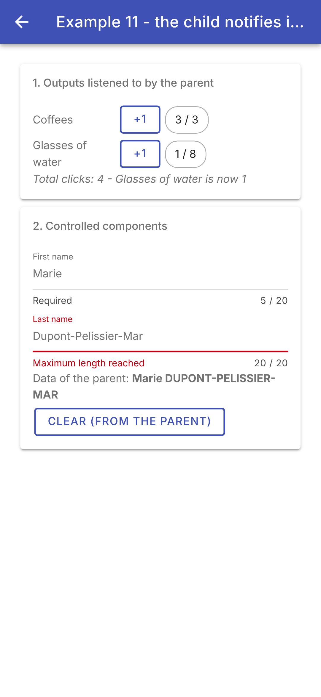
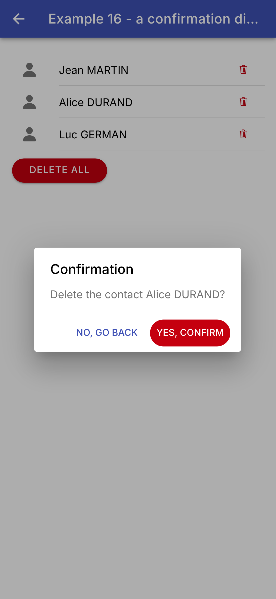

4. Componentes
Escribir sus propios componentes está en el corazón del trabajo con [Angular] e [Ionic]: una pantalla bien escrita se compone de pequeños componentes, cada uno con sus propias entradas, plantilla, estilo y, si es necesario, estado. Este capítulo muestra cómo se comunican entre sí (entradas y salidas), cómo se ensamblan (proyección de contenido, plantillas), cómo funcionan (ciclo de vida), cómo comparten datos sin pasárselos de uno a otro (inyección de dependencias) y cómo reutilizar comportamientos (directivas). Es el equivalente del capítulo “Widgets” del curso de [Flutter]: mismos ejemplos, mismas pantallas, pero con las herramientas de [Angular].
4.1. Ejemplo 10: Los componentes y sus entradas
4.1.1. Tipo de datos
El padre y el hijo comparten un tipo, almacenado en su propio archivo:
| // =========================================================================
// src/app/ex10-component-inputs/doctor.ts - el tipo de los datos
// -------------------------------------------------------------------------
// El tipo compartido por el padre (Ex10Page) y el hijo (DoctorCard).
// Una interface de TypeScript no produce código: solo la usa el
// compilador, que verifica que cada objeto tenga todos sus campos.
// readonly: nunca modificamos un médico; construimos otro.
// =========================================================================
export interface Doctor {
readonly id: number;
readonly title: string;
readonly firstName: string;
readonly lastName: string;
readonly specialty: string;
readonly available: boolean;
}
// una copia donde solo cambia la disponibilidad: ...m copia todos los campos
// de m, y luego available los reemplaza
export function withAvailability(m: Doctor, available: boolean): Doctor {
return { ...m, available };
}
|
- líneas 10–17: una interfaz [TypeScript]: la forma de un médico. No genera ningún código en tiempo de ejecución; solo la usa el compilador, que verifica que cada objeto tenga todos sus campos del tipo correcto. [readonly] prohíbe modificar un campo después de crear el objeto;
- líneas 21–23: una copia en la que solo cambia la disponibilidad. [{ ...m, available }] copia todos los campos de [m] (el operador de descomposición [...]), y luego el campo [available] reemplaza al de [m]: el objeto original nunca cambia.
Mientras que [Dart] define una clase con un constructor de parámetros con nombre, [TypeScript] usa solo una interfaz y objetos literales; [{ id: 1, title: 'Mme', ... }] ya tiene “parámetros con nombre”.
4.1.2. El hijo
El componente [DoctorCard] muestra a un médico en una tarjeta de [Ionic]. Como el resto del curso, se escribe en dos archivos: la clase ([doctor-card.ts]) y su plantilla ([doctor-card.html]).
| // =========================================================================
// src/app/ex10-component-inputs/doctor-card.ts - un componente HIJO
// -------------------------------------------------------------------------
// Recibe sus datos de su padre mediante sus INPUTS, declarados
// por las funciones input() e input.required(). Su tipo se verifica en
// tiempo de compilación (strictTemplates): [doctor]="42" sería rechazado.
// - input.required<T>(): el padre DEBE proporcionar este input;
// - input(false) : un input opcional, con su valor predeterminado;
// - transform : una función que convierte el valor recibido
// (booleanAttribute, numberAttribute: los de Angular, para escribir
// compact o rank="1" como simples atributos HTML).
// Un input es un SIGNAL de solo lectura: lo leemos llamándolo,
// doctor(), y la pantalla sigue sus cambios.
//
// Regla de oro: un componente NUNCA MODIFICA sus inputs (el compilador lo
// prohíbe de todos modos: un input() no tiene set ni update). Los datos
// fluyen hacia abajo, del padre al hijo; para solicitar un cambio,
// el hijo notifica a su padre con un output (vea el ejemplo 11).
// =========================================================================
import { booleanAttribute, Component, computed, input, numberAttribute } from '@angular/core';
import { IonAvatar, IonCard, IonCardContent, IonLabel, IonText } from '@ionic/angular';
import { Doctor } from './doctor';
@Component({
selector: 'app-doctor-card',
imports: [IonCard, IonCardContent, IonAvatar, IonLabel, IonText],
templateUrl: './doctor-card.html',
// el "estilo" de la tarjeta: se aplica ÚNICAMENTE a la plantilla de este componente.
// Angular agrega a las etiquetas de la plantilla un atributo propio, y
// reescribe los selectores en consecuencia: ningún otro componente puede
// verse afectado por estas reglas (encapsulación de estilos)
styles: `
ion-card { margin: 6px 0; border: 2px solid transparent; border-radius: 12px; }
ion-card.available { border-color: #4caf50; }
ion-card-content { display: flex; align-items: center; gap: 12px; padding: 12px; }
ion-avatar {
width: 40px; height: 40px; display: flex; align-items: center; justify-content: center;
background: #087ea4; color: white; font-weight: bold;
}
h2 { margin: 0; font-size: 17px; color: var(--ion-text-color); }
`,
})
export class DoctorCard {
// los inputs: un doctor y un rank obligatorios, una visualización compact opcional
readonly doctor = input.required<Doctor>();
// numberAttribute: rank="1" (una cadena) se convierte en el número 1
readonly rank = input.required({ transform: numberAttribute });
// booleanAttribute: el atributo solo (<app-doctor-card compact />) es true
readonly compact = input(false, { transform: booleanAttribute });
// un valor calculado a partir de los inputs: sigue sus cambios
readonly initials = computed(() => this.doctor().firstName[0] + this.doctor().lastName[0]);
}
|
- línea 26: el selector, el nombre de la etiqueta del componente. El padre escribirá [<app-doctor-card ... />];
- línea 27: los componentes de [Ionic] que usa la plantilla. Un componente solo conoce lo que importa;
- Líneas 33–42: el “estilo” de la tarjeta. Estas reglas se aplican solo a la plantilla de este componente. [Angular] agrega un atributo único a las etiquetas de la plantilla y reescribe los selectores en consecuencia (encapsulación de estilos). Por lo tanto, la regla [ion-card { ... }] no afecta a ninguna otra tarjeta de la aplicación. Esto equivale a las constantes de estilo privadas del widget de [Flutter], o a los “módulos CSS” de [React]: el estilo de un componente se almacena con él y no interfiere con nada más;
- línea 35: un borde verde para la clase [available], que la plantilla aplica a la tarjeta de un médico disponible;
- líneas 37–40: el círculo de las iniciales, en un azul propio de la tarjeta;
- línea 46: una primera entrada, obligatoria: [input.required<Doctor>()]. El padre DEBE proporcionarla; de lo contrario, el compilador rechaza la plantilla. También debe proporcionar un [Doctor]: [[doctor]="42"] también sería rechazado (opción de proyecto [strictTemplates]);
- Línea 48: una segunda entrada obligatoria, la posición, con una transformación: [numberAttribute], una función de [Angular] que convierte el valor recibido en un número. El padre puede entonces ingresar [rank="1"] (una cadena, como cualquier atributo HTML) o [[rank]="i + 1"] (un número);
- Línea 50: una entrada opcional, con su valor por defecto ([false]) y otra transformación: [booleanAttribute]. El atributo solo, [<app-doctor-card compact />], equivale entonces a [true], igual que el atributo [disabled] de un botón HTML;
- línea 53: un valor calculado a partir de las entradas. Una entrada es un SIGNAL de solo lectura: se lee llamándola ([this.doctor()]), y [computed] recalcula las iniciales cada vez que el padre especifica un médico diferente.
| <!-- ======================================================================
doctor-card.html - la plantilla del componente DoctorCard
Solo lee los inputs del componente: doctor(), rank(), compact().
====================================================================== -->
<!-- [class.available]: la clase CSS available (un borde verde)
solo se aplica si el médico está disponible -->
<ion-card [class.available]="doctor().available">
<ion-card-content>
<!-- un disco de color, con las iniciales -->
<ion-avatar>{{ initials() }}</ion-avatar>
<ion-label>
<h2>{{ rank() }}. {{ doctor().title }} {{ doctor().firstName }} {{ doctor().lastName }}</h2>
<!-- la especialidad solo existe en la visualización no compacta -->
@if (!compact()) {
<ion-text color="medium">{{ doctor().specialty }}</ion-text>
}
</ion-label>
</ion-card-content>
</ion-card>
|
- línea 8: [[class.available]="..."] coloca la clase CSS [available] en la tarjeta cuando la expresión es verdadera, y la quita en caso contrario;
- línea 11: un [ion-avatar] (un disco), con las iniciales;
- línea 13: la posición y el nombre del médico, leídos de las entradas;
- líneas 15–17: la especialidad se muestra solo en modo no compacto.
Regla de oro: un componente nunca modifica sus entradas. De hecho, el compilador lo prohíbe: un signal creado por [input()] no tiene [set] ni [update]. Los datos fluyen del padre al hijo; para solicitar un cambio, el hijo lo notifica a su padre mediante una salida (Ejemplo 11). Cuando el padre cambia sus datos, [Angular] asigna los nuevos valores a las entradas de sus hijos, y la pantalla se actualiza en consecuencia.
4.1.3. El padre
| // =========================================================================
// src/app/ex10-component-inputs/ex10.page.ts - el componente PADRE
// -------------------------------------------------------------------------
// Importa el componente DoctorCard y lo usa, tantas veces como
// sea necesario, como cualquier componente de Ionic: un componente es una
// pieza REUTILIZABLE de interfaz, con sus propios inputs, su plantilla
// y su estilo. Escribir componentes propios es el corazón del trabajo
// con Angular: una pantalla bien escrita se compone de pequeños componentes.
// =========================================================================
import { Component, signal } from '@angular/core';
import {
IonBackButton, IonButton, IonButtons, IonContent, IonHeader, IonText, IonTitle, IonToggle, IonToolbar,
} from '@ionic/angular';
import { DoctorCard } from './doctor-card';
import { withAvailability, Doctor } from './doctor';
@Component({
selector: 'app-ex10',
// importamos DoctorCard como importamos los componentes de Ionic
imports: [
IonHeader, IonToolbar, IonButtons, IonBackButton, IonTitle, IonContent, IonToggle, IonButton, IonText,
DoctorCard,
],
templateUrl: './ex10.page.html',
})
export class Ex10Page {
// el estado del padre: la lista de médicos (que será reemplazada por
// otra, nunca modificada en el lugar) y la visualización compact
readonly doctors = signal<Doctor[]>([
{ id: 1, title: 'Mme', firstName: 'Marie', lastName: 'PELISSIER', specialty: 'general practitioner', available: true },
{ id: 2, title: 'Mr', firstName: 'Paul', lastName: 'TATOU', specialty: 'pediatrician', available: false },
{ id: 3, title: 'Melle', firstName: 'Sophie', lastName: 'DUPONT', specialty: 'general practitioner', available: true },
]);
readonly compact = signal(false);
// el padre cambia SUS datos: una nueva lista, formada por copias.
// Angular actualiza los inputs de las tarjetas, que lo siguen
toggleAvailability(): void {
this.doctors.update((list) => list.map((m) => withAvailability(m, !m.available)));
}
}
|
- línea 15: el padre importa el componente [DoctorCard]...
- líneas 21–24: ... y lo declara en su [imports], exactamente igual que los componentes de [Ionic]: un componente personalizado se usa igual que un componente del framework;
- líneas 30–35: el estado del padre: la lista de médicos (un signal cuyo valor se reemplazará por otra lista, nunca se modificará in situ) y la visualización compacta;
- líneas 39–41: el padre reemplaza SUS datos por una nueva lista formada por copias de los médicos. [Angular] proporciona a las tarjetas sus nuevas entradas, y estas se actualizan.
| <!-- ======================================================================
ex10.page.html - la plantilla del padre: usa <app-doctor-card>
====================================================================== -->
<ion-header>
<ion-toolbar color="primary">
<ion-buttons slot="start">
<ion-back-button defaultHref="/" />
</ion-buttons>
<ion-title>Example 10 - components and their inputs</ion-title>
</ion-toolbar>
</ion-header>
<ion-content class="ion-padding">
<!-- justify="space-between": la etiqueta a la izquierda, el interruptor a la derecha -->
<ion-toggle justify="space-between" [checked]="compact()" (ionChange)="compact.set($event.detail.checked)">
compact display
</ion-toggle>
<ion-button fill="outline" (click)="toggleAvailability()">Toggle the availabilities</ion-button>
<!-- una tarjeta por médico; cada tarjeta recibe SUS inputs mediante [input]="expresión" -->
@for (m of doctors(); track m.id; let i = $index) {
<app-doctor-card [doctor]="m" [rank]="i + 1" [compact]="compact()" />
}
<p><ion-text color="medium">The same card, in its compact version, by fixing the input:</ion-text></p>
<!-- rank="1" y compact: atributos simples, convertidos por las transformaciones
numberAttribute y booleanAttribute -->
<div style="width: 260px">
<app-doctor-card [doctor]="doctors()[0]" rank="1" compact />
</div>
</ion-content>
|
- líneas 16–18: un interruptor de [Ionic] ([ion-toggle]), el equivalente de [SwitchListTile] de [Flutter]. [justify="space-between"] coloca la etiqueta a la izquierda y el interruptor a la derecha; [(ionChange)] es el evento que se dispara con cada cambio, y [$event.detail.checked] es su nuevo estado;
- línea 20: un botón con borde ([fill="outline"]), el equivalente de [OutlinedButton];
- líneas 23–25: una tarjeta por médico. [track m.id] le indica a [Angular] cómo identificar a un médico de una lista a otra (el equivalente de la clave [ValueKey(m.id)] de [Flutter]); [let i = $index] especifica la posición del elemento. Cada tarjeta recibe SUS entradas, mediante la sintaxis [[input]="expression"]: la expresión se evalúa en el padre y su valor se pasa a la entrada del hijo;
- línea 31: la misma tarjeta, en versión compacta, dentro de un cuadro de 260 píxeles de ancho. [rank="1"] y [compact] se escriben como simples atributos HTML: las transformaciones [numberAttribute] y [booleanAttribute] del hijo los convierten en [1] y [true].
Inicialmente, y luego en vista compacta, la disponibilidad se invierte:
¿Es un método que crea un fragmento de plantilla o un componente propiamente dicho? [Angular] deja poco margen de elección: un fragmento de interfaz reutilizable es un componente. Esto es bueno: tiene un nombre, sus entradas están tipadas y se validan en tiempo de compilación, sus estilos están encapsulados y puede reutilizarse en otros lugares. Mientras que [Flutter] pasa los datos mediante los parámetros del constructor de un widget, [Angular] los pasa mediante entradas, que son signals: el hijo no tiene que hacer nada para seguir sus cambios.
4.2. Ejemplo 11: el hijo notifica a su padre
Los datos fluyen hacia abajo mediante las entradas; la información vuelve hacia arriba mediante las salidas: eventos que el hijo emite y que el padre escucha, igual que escucha el evento [(click)] de un botón.
4.2.1. Los "eventos" del hijo
| // =========================================================================
// src/app/ex11-lifting-state-up/counter.ts
// -------------------------------------------------------------------------
// Un hijo que NOTIFICA a su padre: declara OUTPUTS,
// con la función output(), y los "emite" cuando ocurre algo.
// El padre se suscribe a ellos en su plantilla, como al evento (click) de un
// botón:
// <app-counter label="Coffees" [max]="3" (incremented)="..." (limit)="..." />
// - output<number>(): un evento que transporta un número ($event);
// - output<void>() : un evento sin datos.
// =========================================================================
import { Component, input, output, signal } from '@angular/core';
import { IonButton, IonChip } from '@ionic/angular';
@Component({
selector: 'app-counter',
imports: [IonButton, IonChip],
templateUrl: './counter.html',
styles: `
:host { display: flex; align-items: center; }
.label { width: 110px; }
`,
})
export class Counter {
// los inputs (lo que fluye hacia abajo)...
readonly label = input.required<string>();
readonly max = input.required<number>();
// ... y los outputs (lo que fluye hacia arriba)
readonly incremented = output<number>(); // con el nuevo valor
readonly limit = output<void>(); // sin datos
// el estado PROPIO de este contador: cada Counter tiene el suyo
readonly value = signal(0);
plus(): void {
if (this.value() >= this.max()) {
// emit(): notifica a todos los que escuchan el output
this.limit.emit();
return;
}
this.value.update((v) => v + 1);
// NOTIFICAMOS al padre, pasándole el nuevo valor
this.incremented.emit(this.value());
}
}
|
- líneas 20–23: el estilo del componente. [:host] se refiere a la propia etiqueta del componente ([<app-counter>]), cuyos hijos se alinean en una sola línea ([display: flex]);
- líneas 27–28: las entradas: lo que fluye hacia abajo desde el padre;
- líneas 30–31: las salidas: lo que vuelve hacia arriba al padre. [output<number>()] declara un evento que transporta un número; [output<void>()] declara un evento sin datos. Son los equivalentes de los parámetros [onIncrement] (un [ValueChanged<int>]) y [onLimit] (un [VoidCallback]) del contador de [Flutter]: en lugar de recibir funciones del padre, el hijo emite eventos, a los que el padre se suscribe;
- línea 34: el estado PROPIO de este contador; cada [Counter] tiene el suyo;
- líneas 36–45: si se supera el máximo, el contador notifica a su padre ([this.limit.emit()]); de lo contrario, cambia su estado y luego notifica a su padre transmitiendo el nuevo valor ([this.incremented.emit(...)]). El signal ya tiene su nuevo valor cuando se lee en la línea 44.
| <!-- ======================================================================
counter.html - una etiqueta, un botón +1 y el valor del contador
====================================================================== -->
<span class="label">{{ label() }}</span>
<ion-button fill="outline" (click)="plus()">+1</ion-button>
<ion-chip [outline]="true">{{ value() }} / {{ max() }}</ion-chip>
|
- Líneas 4–6: una etiqueta, un botón ([+1]) y un chip ([ion-chip]) que muestra el valor y el máximo.
4.2.2. Un componente controlado
Un campo de formulario personalizado (etiqueta + campo + información sobre herramientas + contador de caracteres) que funciona como campo controlado: el valor pertenece al padre, que lo pasa al campo y es notificado de cada pulsación de tecla. [Angular] dispone de una función ya preparada para este fin, [model()].
| // =========================================================================
// src/app/ex11-lifting-state-up/text-field.ts - un componente CONTROLADO
// -------------------------------------------------------------------------
// Un campo de formulario "propio" (etiqueta + campo + ayuda + contador de
// caracteres) que se usa como un campo controlado, con un
// enlace BIDIRECCIONAL:
// <app-text-field [(value)]="firstName" label="First name" [max]="20" />
// El valor pertenece al PADRE (su signal firstName). model() declara a la
// vez un input (value) y un output (valueChange):
// - el padre pasa su valor al campo: [value]="firstName()";
// - el campo cambia el valor: value.set(...), lo que emite valueChange;
// - la sintaxis [(value)]="firstName" (el "banana in a box") escribe
// ambos a la vez: el signal del padre sigue lo que se escribe.
// Cuando el propio padre cambia el valor (botón Limpiar), el campo lo sigue,
// sin nada más que escribir: un input es un signal.
//
// El mensaje de error (errorText): Ionic solo lo muestra si el campo lleva
// las clases ion-invalid e ion-touched, que él mismo copia del estado
// del control de formulario de Angular (ngModel, vea los ejemplos 07 y 08).
// Por eso pasamos por ngModel y establecemos el error de su control.
// =========================================================================
import { Component, computed, effect, input, model, viewChild } from '@angular/core';
import { FormsModule, NgModel } from '@angular/forms';
import { IonInput } from '@ionic/angular';
@Component({
selector: 'app-text-field',
imports: [IonInput, FormsModule],
templateUrl: './text-field.html',
})
export class TextField {
// model.required: un input obligatorio... que el componente puede modificar
readonly value = model.required<string>();
readonly label = input.required<string>();
readonly max = input.required<number>();
readonly help = input('');
// ¿está lleno el campo?
readonly full = computed(() => this.value().length === this.max());
// el ngModel de la plantilla, y el control de formulario que gestiona
private readonly model = viewChild.required(NgModel);
constructor() {
// un effect: se vuelve a ejecutar cada vez que cambia full(). Declara
// el control como "touched" y "con error" cuando el campo está lleno
effect(() => {
const control = this.model().control;
control.markAsTouched();
control.setErrors(this.full() ? { full: true } : null);
});
}
}
|
- Línea 34: [model.required<string>()] declara a la vez una entrada ([value]) y una salida ([valueChange]). Es un signal que el propio componente puede modificar: [this.value.set('...')] cambia su valor Y emite [valueChange], lo que notifica al padre. El padre escribirá [[(value)]="firstName"] (la “banana en una caja”): su signal [firstName] se pasa al campo, que sigue la entrada;
- líneas 35–37: las demás entradas: la etiqueta, la longitud máxima y un texto de ayuda opcional (vacío por defecto);
- línea 40: ¿está lleno el campo? Un valor calculado a partir del valor y del máximo;
- línea 43: [viewChild.required(NgModel)]: la directiva de plantilla [ngModel] (el control de formulario de [Angular], visto en los ejemplos 07 y 08), en forma de signal;
- Líneas 48–52: un EFECTO: una función que se vuelve a ejecutar cada vez que cambia un signal que observa (aquí, [full()]). Marca el control como “touched” y lo pone en error cuando el campo está lleno. ¿Por qué pasar por la verificación del formulario? Porque [Ionic] solo muestra el mensaje de error de un [ion-input] ([errorText]) si el campo tiene las clases CSS [ion-invalid] y [ion-touched]; y con [Angular], este genera por sí mismo estas clases según el estado del control de formulario (sus clases [ng-invalid] y [ng-touched]). Establecerlas manualmente no tendría sentido: [Ionic] las quitaría en la siguiente pulsación de tecla.
| <!-- ======================================================================
text-field.html - un ion-input, controlado por el valor del padre
====================================================================== -->
<!-- [(ngModel)]="value": el enlace bidireccional entre el campo y el
signal value (el model() del componente): cada pulsación de tecla hace value.set(...),
lo que emite valueChange al padre; un nuevo valor del padre
se muestra en el campo.
[maxlength]: el campo rechaza los caracteres sobrantes;
[counter]: muestra un contador ("5 / 20");
errorText reemplaza a helperText (y el campo se pone rojo) cuando el control tiene un error -->
<ion-input
[(ngModel)]="value"
[label]="label()"
labelPlacement="floating"
[maxlength]="max()"
[counter]="true"
[helperText]="help()"
errorText="Maximum length reached"
/>
|
- Línea 13: [[(ngModel)]="value"]: el enlace bidireccional entre el campo y el signal [value]. [ngModel] acepta un signal editable: cada pulsación de tecla desencadena [value.set(...)], lo que notifica al padre; un nuevo valor del padre se muestra en el campo;
- líneas 14–15: la etiqueta, que “flota” sobre el campo cuando este tiene un valor o el foco;
- línea 16: el campo rechaza cualquier carácter adicional;
- línea 17: muestra un contador (“5 / 20”);
- línea 18: una información sobre herramientas debajo del campo;
- línea 19: el mensaje que reemplaza la información sobre herramientas y pone el campo en rojo cuando el control está en error (el campo está lleno).
El campo de [Flutter] presentaba una dificultad particular: un [TextField] almacena su texto en un controlador, que había que mantener actualizado en [didUpdateWidget] cada vez que el padre cambiaba el valor por sí mismo (mediante el botón “Clear”). Aquí no hay nada parecido: el valor del padre llega mediante un signal, y [ngModel] lo copia de vuelta al campo en cuanto cambia.
4.2.3. El padre
| // =========================================================================
// src/app/ex11-lifting-state-up/ex11.page.ts - el padre escucha a sus hijos
// -------------------------------------------------------------------------
// Los datos fluyen hacia abajo (inputs); la información fluye hacia arriba mediante los
// OUTPUTS de los hijos:
// 1. "eventos" del hijo: (incremented), (limit);
// 2. un componente controlado: [(value)], como el [(ngModel)] de un campo.
// El estado sigue siendo propiedad del padre, que puede modificarlo él mismo (Limpiar).
// =========================================================================
import { Component, signal } from '@angular/core';
import {
IonBackButton, IonButton, IonButtons, IonCard, IonCardContent, IonCardHeader, IonCardSubtitle, IonContent,
IonHeader, IonTitle, IonToolbar,
} from '@ionic/angular';
import { TextField } from './text-field';
import { Counter } from './counter';
@Component({
selector: 'app-ex11',
imports: [
IonHeader, IonToolbar, IonButtons, IonBackButton, IonTitle, IonContent, IonCard, IonCardHeader,
IonCardSubtitle, IonCardContent, IonButton, Counter, TextField,
],
templateUrl: './ex11.page.html',
})
export class Ex11Page {
readonly total = signal(0);
readonly message = signal('');
readonly firstName = signal('Marie');
readonly lastName = signal('PELISSIER');
// el método llamado por un contador: recibe el valor que este le pasa
onIncrement(label: string, value: number): void {
this.total.update((t) => t + 1);
this.message.set(`${label} is now ${value}`);
}
// el padre cambia sus datos: los campos lo siguen
clear(): void {
this.firstName.set('');
this.lastName.set('');
}
}
|
- líneas 30–31: los valores de ambos campos pertenecen al padre: dos signals;
- líneas 34–37: el método invocado cuando un contador emite [incremented]: recibe el valor que este transmite;
- líneas 40–43: el padre cambia el valor por sí mismo: se borran los campos.
| <!-- ======================================================================
ex11.page.html - la plantilla del padre: escucha los outputs de los hijos
====================================================================== -->
<ion-header>
<ion-toolbar color="primary">
<ion-buttons slot="start">
<ion-back-button defaultHref="/" />
</ion-buttons>
<ion-title>Example 11 - the child notifies its parent</ion-title>
</ion-toolbar>
</ion-header>
<ion-content class="ion-padding">
<ion-card>
<ion-card-header>
<ion-card-subtitle>1. Outputs listened to by the parent</ion-card-subtitle>
</ion-card-header>
<ion-card-content>
<!-- (output)="instrucción": $event es el dato emitido por el hijo -->
<app-counter
label="Coffees"
[max]="3"
(incremented)="onIncrement('Coffees', $event)"
(limit)="message.set('No more than 3 coffees!')"
/>
<app-counter
label="Glasses of water"
[max]="8"
(incremented)="onIncrement('Glasses of water', $event)"
(limit)="message.set('Enough drinking.')"
/>
<p><em>Total clicks: {{ total() }} - {{ message() }}</em></p>
</ion-card-content>
</ion-card>
<ion-card>
<ion-card-header>
<ion-card-subtitle>2. Controlled components</ion-card-subtitle>
</ion-card-header>
<ion-card-content>
<!-- [(value)]="firstName": el enlace bidireccional con un signal del padre -->
<app-text-field [(value)]="firstName" label="First name" [max]="20" help="Required" />
<app-text-field [(value)]="lastName" label="Last name" [max]="20" help="Displayed in upper case" />
<!-- los datos del padre, que siguen lo que se escribe -->
<p>Data of the parent: <strong>{{ firstName() }} {{ lastName().toUpperCase() }}</strong></p>
<ion-button fill="outline" (click)="clear()">Clear (from the parent)</ion-button>
</ion-card-content>
</ion-card>
</ion-content>
|
- líneas 21–26: un contador, sus entradas y sus salidas. [(incremented)="onIncrement('Coffees', $event)"]: con cada transmisión, [Angular] ejecuta la instrucción, donde [$event] son los datos transmitidos por el hijo; el padre le agrega su propio argumento (la etiqueta). [(limit)] ejecuta directamente una instrucción: [message.set(...)];
- línea 30: el segundo contador, cuyas salidas se escuchan de la misma manera, con su propia etiqueta (“Glasses of water”);
- líneas 43–44: dos campos controlados, enlazados a los signals del padre [firstName] y [lastName] mediante [[(value)]]. El padre pasa el propio signal ([firstName], sin paréntesis): [Angular] lo lee y lo modifica;
- línea 46: los datos del padre, que sigue la entrada;
- línea 47: el padre cambia el valor por sí mismo: se borran los campos.
Presione cuatro veces el primer contador (a la cuarta vez, emite [limit]), una vez el segundo, y complete el nombre; luego borre los campos desde el padre:
 |  |
Entradas y salidas: ese es todo el diálogo entre un padre y sus hijos en [Angular]. [Flutter] pasaba funciones como parámetros ([onIncrement: (v) => ...]), igual que [React] pasa funciones como “props”; [Angular] prefiere los eventos, que se escuchan con la misma sintaxis que los del navegador ([(click)], [(incremented)]). Y el enlace bidireccional [[( )]], que [Flutter] y [React] escriben manualmente (un valor + una función [onChanged]), aquí es una sintaxis de plantilla.
4.3. Ejemplo 12: composición
4.3.1. Una tarjeta
Las entradas de un componente transmiten datos... El contenido en sí se escribe entre sus etiquetas, como con una etiqueta HTML: [<app-card>...here...</app-card>]. El componente lo coloca donde quiera en su plantilla, mediante la etiqueta [<ng-content>]: esto es la proyección de contenido. [Ionic] la usa en todas partes: el texto de un [ion-button], el contenido de un [ion-card], o de un [ion-item] se proyecta. Es el equivalente de los parámetros [child], [title], o [body] de los widgets de [Flutter], que reciben otros widgets.
| // =========================================================================
// src/app/ex12-composition/card.ts - una PLANTILLA reutilizable
// -------------------------------------------------------------------------
// Los inputs de un componente pasan DATOS... El CONTENIDO, por su parte,
// se escribe entre sus etiquetas, como en una etiqueta HTML, y el componente
// lo coloca donde quiere, con la etiqueta <ng-content>: esto es la
// PROYECCIÓN de contenido. Ionic la usa en todas partes: el contenido de un <ion-button>,
// de un <ion-card>, de un <ion-item>...
// - <ng-content />: el contenido "principal" (todo lo que no está en otro lugar);
// - <ng-content select="[header]">: otro lugar (un "slot"),
// para las etiquetas del padre que llevan el atributo header; lo que
// escribimos entre <ng-content> y </ng-content> es el contenido predeterminado;
// - el pie es opcional: la tarjeta lo busca en su contenido
// (contentChild) y solo lo muestra si está presente.
// La tarjeta define el marco (borde, encabezado, pie), el padre proporciona lo que
// va dentro.
// =========================================================================
import { Component, computed, contentChild, Directive, input } from '@angular/core';
// un MARCADOR: una directiva sin código, que el padre coloca en su pie
// (<span footer>...</span>), para que la tarjeta pueda encontrarlo
@Directive({ selector: '[footer]' })
export class CardFooter {}
@Component({
selector: 'app-card',
templateUrl: './card.html',
styles: `
:host { display: block; margin: 0 0 12px; border: 1px solid var(--bg); border-radius: 8px; overflow: hidden; }
.header { background: var(--bg); padding: 10px; font-weight: bold; }
.header.colored { color: white; }
.body { padding: 10px; }
.footer { background: #f5f5f5; padding: 8px; color: #757575; font-size: 12px; }
`,
// host: enlaces en la propia etiqueta <app-card>. Aquí, una
// variable CSS (--bg), leída por las reglas anteriores
host: { '[style.--bg]': 'background()' },
})
export class Card {
// un color de Ionic, opcional ('primary', 'success'...): undefined de forma predeterminada
readonly color = input<string>();
readonly background = computed(() => (this.color() ? `var(--ion-color-${this.color()})` : '#e0e0e0'));
// contentChild: el primer elemento del CONTENIDO que lleva la directiva
// CardFooter; un signal, undefined si no hay ninguno
readonly footer = contentChild(CardFooter);
}
|
- líneas 23–24: un MARCADOR, una directiva (una clase sin plantilla; véase el ejemplo 15) que no hace nada. El padre la coloca en su pie de página, [<span footer>...</span>], para que la tarjeta pueda localizarlo dentro de su contenido;
- líneas 29–35: el estilo de la tarjeta. Los colores provienen de una variable CSS, [--bg];
- línea 38: [host]: enlaces en la propia etiqueta del componente ([<app-card>]). Aquí, a la variable CSS [--bg] se le asigna el valor calculado [background()];
- línea 42: una entrada opcional sin valor por defecto: [undefined] si el padre no la proporciona. Como los componentes de [Ionic], a la tarjeta se le da el nombre de un color del tema ([primary], [success]...);
- línea 43: el color de fondo: la variable CSS de [Ionic] que corresponde a este color ([var(--ion-color-primary)]...), o gris claro;
- línea 47: [contentChild(CardFooter)] busca en el CONTENIDO proporcionado por el padre el primer elemento que contenga la directiva [CardFooter]. Es un signal: [undefined] si no se encuentra ninguno.
| <!-- ======================================================================
card.html - el marco de la tarjeta y tres lugares para el contenido
====================================================================== -->
<!-- el encabezado: los estilos de .header (negrita, blanco sobre un color)
se aplican, por herencia, a TODOS los textos provistos por el padre -->
<div class="header" [class.colored]="color()">
<ng-content select="[header]">Untitled</ng-content>
</div>
<!-- el contenido principal, proporcionado por el padre -->
<div class="body">
<ng-content />
</div>
<!-- sin pie proporcionado: ningún pie en absoluto -->
@if (footer()) {
<div class="footer">
<ng-content select="[footer]" />
</div>
}
|
- líneas 7–9: el encabezado. [<ng-content select="[header]">] es una ranura (slot): recibe las etiquetas de contenido que coinciden con el selector CSS [[header]], es decir, las que llevan el atributo [header]. El texto entre [<ng-content>] y [</ng-content>] (“Untitled”) es el contenido por defecto, que se muestra cuando el padre no proporciona un encabezado. Los estilos de [.header] (negrita, texto blanco sobre fondo de color) se aplican, por herencia, a todo el texto proporcionado por el padre: es el equivalente de [DefaultTextStyle] en [Flutter];
- líneas 12–14: el contenido principal: [<ng-content />], sin selector, recibe todo lo que no fue a parar a ningún otro lugar;
- líneas 17–21: si no se proporciona pie de página, no hay ningún pie de página (ni su margen ni su fondo gris).
4.3.2. Una tabla genérica
| // =========================================================================
// src/app/ex12-composition/data-table.ts - una tabla GENÉRICA
// -------------------------------------------------------------------------
// DataTable<T> es un componente genérico: muestra filas de
// cualquier tipo T. Sabe recorrer las filas, pero no cómo
// mostrar UNA celda: es el padre quien se lo indica, pasándole,
// en su contenido, una PLANTILLA (<ng-template>) por columna:
// <app-data-table [rows]="slots">
// <ng-template column="Slot" let-c>{{ c.time }}</ng-template>
// </app-data-table>
// Un <ng-template> no se muestra donde está escrito: es un fragmento
// de plantilla "en espera", que la tabla muestra por sí misma, tantas veces
// como sea necesario (ngTemplateOutlet), entregándole sus datos (la fila,
// su posición): let-c recibe la fila, let-i="index" su posición.
// El contenido lo proporciona el padre, pero usa datos que
// pertenecen al hijo: es el equivalente de los "builders" de Flutter
// (ListView.builder) y de los "render props" de React.
// =========================================================================
import { NgTemplateOutlet } from '@angular/common';
import { Component, contentChildren, Directive, inject, input, TemplateRef } from '@angular/core';
// los datos que recibe una plantilla de celda: $implicit es el valor de
// let-c (sin nombre), index el de let-i="index"
export interface CellContext<T> {
$implicit: T;
index: number;
}
// una COLUMNA: una directiva colocada en un <ng-template>. Lleva el título
// de la columna y da acceso a la plantilla (TemplateRef) en la que está colocada
@Directive({ selector: 'ng-template[column]' })
export class Column {
readonly title = input.required<string>({ alias: 'column' });
readonly template = inject<TemplateRef<CellContext<unknown>>>(TemplateRef);
}
@Component({
selector: 'app-data-table',
imports: [NgTemplateOutlet],
templateUrl: './data-table.html',
styles: `
table { width: 100%; border-collapse: collapse; }
th { text-align: left; padding: 6px; border-bottom: 1px solid #ccc; }
td { padding: 6px; border-top: 1px solid #e0e0e0; }
tbody tr:first-child td { border-top: none; }
.empty { color: #9e9e9e; padding: 6px; }
`,
})
export class DataTable<T> {
// T se deduce del tipo de [rows]: DataTable<Slot>...
readonly rows = input.required<readonly T[]>();
// contentChildren: TODAS las columnas del contenido, en orden (un signal)
readonly columns = contentChildren(Column);
}
|
- líneas 25–28: los datos que una plantilla de celda recibe de la tabla: la fila ([$implicit], el valor por defecto) y su columna ([index]);
- líneas 32–36: una COLUMNA, una directiva que se aplica solo a un [<ng-template>] (su selector, [ng-template[column]]). Un [<ng-template>] no se muestra donde está escrito: es un fragmento de plantilla “pendiente” (una PLANTILLA) que otro mostrará tantas veces como sea necesario. La directiva lleva el título de la columna (la entrada [title], que toma el nombre de la directiva mediante el alias: [column="Slot"]), y proporciona acceso a la plantilla en la que se coloca ([inject(TemplateRef)]);
- Línea 50: [DataTable<T>] es un componente genérico: muestra filas de cualquier tipo [T]. Sabe recorrer las filas, pero no cómo mostrar una celda: el componente padre se lo indica pasándole una plantilla por columna. Este es el principio detrás de los “builders” de [Flutter] ([ListView.builder], la función [cells] del ejemplo de [Flutter]) y de los “render props” de [React]: el contenido lo proporciona el padre, pero usa datos que pertenecen al hijo (la fila, su posición);
- línea 52: las filas. [T] se infiere a partir del tipo del valor proporcionado por el padre: con [[rows]="slots"], es un [DataTable<Slot>];
- línea 54: [contentChildren(Column)]: TODAS las columnas del contenido, en el orden en que el padre las escribió (un signal que contiene un arreglo).
| <!-- ======================================================================
data-table.html - una fila de títulos y luego una fila por elemento
====================================================================== -->
<table>
<thead>
<tr>
@for (col of columns(); track col) {
<th>{{ col.title() }}</th>
}
</tr>
</thead>
<tbody>
@for (row of rows(); track $index; let i = $index) {
<tr>
@for (col of columns(); track col) {
<!-- la celda de ESTA fila y de esta columna, construida por la
plantilla del padre, con sus datos (context) -->
<td>
<ng-container *ngTemplateOutlet="col.template; context: { $implicit: row, index: i }" />
</td>
}
</tr>
}
</tbody>
</table>
<!-- sin filas: el contenido [empty] proporcionado por el padre, o un texto predeterminado -->
@if (rows().length === 0) {
<div class="empty">
<ng-content select="[empty]">No data.</ng-content>
</div>
}
|
- líneas 6–10: una fila de encabezados, uno por columna;
- líneas 13–23: una fila de tabla por elemento y, en cada fila, una celda por columna;
- línea 19: [*ngTemplateOutlet] muestra la plantilla de la columna ([col.template]) en este lugar, proporcionándole sus datos ([context]): la fila y su posición. [<ng-container>] es una etiqueta que no existe en la página: se usa únicamente para portar la directiva;
- Líneas 27–31: sin filas, el contenido [[empty]] proporcionado por el padre, o un texto por defecto. Los encabezados de las columnas siguen mostrándose.
La propia tabla crea las celdas ([<td>]) alrededor de las plantillas: su estilo (márgenes, bordes) es, por lo tanto, el de la tabla, y el elemento padre solo necesita proporcionar el contenido dentro de ellas.
4.3.3. El padre
| // =========================================================================
// src/app/ex12-composition/ex12.page.ts - usar las plantillas Card y DataTable
// =========================================================================
import { Component } from '@angular/core';
import {
IonBackButton, IonButtons, IonChip, IonContent, IonHeader, IonIcon, IonTitle, IonToolbar,
} from '@ionic/angular';
import { addIcons } from 'ionicons';
import { calendar } from 'ionicons/icons';
import { Card, CardFooter } from './card';
import { Column, DataTable } from './data-table';
// un slot: un tipo escrito en línea (sin necesidad de una interface con nombre en otro lugar)
type Slot = { id: number; time: string; patient: string | null };
const slots: Slot[] = [
{ id: 1, time: '8:00 - 8:20', patient: null },
{ id: 2, time: '8:20 - 8:40', patient: 'Mme Alice DURAND' },
{ id: 3, time: '8:40 - 9:00', patient: null },
];
@Component({
selector: 'app-ex12',
imports: [
IonHeader, IonToolbar, IonButtons, IonBackButton, IonTitle, IonContent, IonIcon, IonChip,
Card, CardFooter, DataTable, Column,
],
templateUrl: './ex12.page.html',
})
export class Ex12Page {
readonly slots = slots;
readonly free = slots.filter((c) => c.patient === null).length;
// una lista vacía, de un tipo dado explícitamente (nada permite adivinarlo)
readonly persons: { id: number; name: string }[] = [];
constructor() {
addIcons({ calendar });
}
}
|
- línea 15: una franja horaria, un tipo en línea. [string | null]: un paciente, o nadie;
- línea 27: el padre importa los componentes [Card] y [DataTable], así como las directivas [CardFooter] y [Column], que utiliza en su plantilla;
- línea 33: el número de franjas horarias disponibles;
- línea 35: una lista vacía, cuyo tipo se especifica explícitamente (no hay otra manera de inferirlo).
| <!-- ======================================================================
ex12.page.html - tarjetas y lo que ponemos dentro de ellas
====================================================================== -->
<ion-header>
<ion-toolbar color="primary">
<ion-buttons slot="start">
<ion-back-button defaultHref="/" />
</ion-buttons>
<ion-title>Example 12 - composition</ion-title>
</ion-toolbar>
</ion-header>
<ion-content class="ion-padding">
<!-- el encabezado (atributo header) y el pie (atributo footer) van a sus
lugares; el resto es el contenido principal -->
<app-card color="primary">
<div header style="display: flex; align-items: center; gap: 8px">
<ion-icon name="calendar" />
<span>Schedule of Mme PELISSIER</span>
</div>
<span footer>{{ free }} free slot(s)</span>
<!-- el contenido principal: una tabla de slots, una plantilla por columna -->
<app-data-table [rows]="slots">
<!-- let-i="index": la posición de la fila -->
<ng-template column="#" let-i="index">{{ i + 1 }}</ng-template>
<!-- let-c: la fila misma -->
<ng-template column="Slot" let-c>{{ c.time }}</ng-template>
<ng-template column="Status" let-c>
@if (c.patient) {
<ion-chip [outline]="true">{{ c.patient }}</ion-chip>
} @else {
<ion-chip color="success">Free</ion-chip>
}
</ng-template>
</app-data-table>
</app-card>
<app-card color="success">
<span header>A card without a footer</span>
The footer is not provided: the card does not display it.
</app-card>
<!-- sin encabezado proporcionado: el contenido predeterminado, "Untitled" -->
<app-card>
<app-data-table [rows]="persons">
<ng-template column="Name" let-p>{{ p.name }}</ng-template>
<span empty>Nobody for now.</span>
</app-data-table>
</app-card>
</ion-content>
|
- líneas 17–37: una tarjeta, con el color [primary];
- líneas 18–21: su encabezado: una etiqueta con el atributo [header], que por lo tanto va en la ranura [select="[header]"] de la tarjeta; contiene un ícono y texto;
- línea 22: su pie de página, que tiene el atributo [footer] (y por lo tanto la directiva [CardFooter]);
- líneas 24–36: el contenido principal: una tabla de franjas, con una plantilla por columna. [let-c] declara una variable de plantilla, a la que se asigna el valor [$implicit] del contexto (la fila); [let-i="index"] es una variable que recibe el valor [index] (la posición). La plantilla de la columna “Status” contiene un [@if] y componentes de [Ionic] ([ion-chip]): una plantilla es igual que cualquier otra plantilla;
- líneas 39–42: una tarjeta sin pie de página;
- líneas 45–50: una tarjeta sin encabezado (el contenido por defecto, “Untitled”); su tabla está vacía y muestra el contenido [empty] proporcionado por el padre.
Las variables de plantilla ([c], [p]) son aquí de tipo [any]: [Angular] no vincula el tipo de un [<ng-template>] con el [T] de la tabla que lo mostrará (podríamos ayudarlo a hacerlo escribiendo un método [ngTemplateContextGuard] en la directiva, como lo hace [NgFor]; eso excede el alcance de este ejemplo).

La tarjeta define el marco (borde, encabezado, pie de página); el padre proporciona el contenido que va dentro. Así se construyen los propios componentes de [Ionic]: [ion-card] recibe su encabezado y su contenido, mientras que [ion-item] recibe elementos colocados al principio ([slot="start"]) o al final ([slot="end"]). [Flutter] pasa el contenido mediante los parámetros de un widget, y [Angular] lo escribe entre las etiquetas del componente; cuando el contenido depende de datos del hijo, [Flutter] pasa una función, y [Angular] pasa una plantilla ([<ng-template>]).
4.4. Ejemplo 13: el ciclo de vida de un componente
4.4.1. Un reloj
| // =========================================================================
// src/app/ex13-lifecycle/clock.ts - un componente que se inicia y se detiene
// -------------------------------------------------------------------------
// La vida de un componente Angular:
// 1. constructor() : se crea el objeto; sus inputs aún no
// tienen su valor;
// 2. ngOnChanges(changes) : sus inputs acaban de recibir un valor
// (la primera vez), y luego cada vez que el
// padre les da uno nuevo;
// 3. ngOnInit() : una sola vez, después del primer ngOnChanges. El
// componente está a punto de aparecer: allí iniciamos lo que
// debe iniciarse;
// 4. afterNextRender(...) : después de su primer renderizado (sus etiquetas
// existen en la página);
// 5. ngOnDestroy() : el componente desaparece para siempre. Allí
// DETENEMOS lo que se ha iniciado.
// Un reloj inicia un temporizador (setInterval) cuando aparece... y
// debe detenerlo sin falta cuando desaparece: de lo contrario el temporizador
// seguiría ejecutándose para nada, sobre un componente muerto.
// =========================================================================
import { afterNextRender, Component, input, OnChanges, OnDestroy, OnInit, output, signal, SimpleChanges }
from '@angular/core';
// "12:05:09": la hora actual
export function currentTime(): string {
return new Date().toLocaleTimeString('en-GB');
}
@Component({
selector: 'app-clock',
templateUrl: './clock.html',
styles: `.time { font-size: 40px; font-family: 'Roboto Mono', monospace; }`,
})
export class Clock implements OnChanges, OnInit, OnDestroy {
// un color de Ionic: 'primary', 'danger'...
readonly color = input('primary');
// el reloj notifica a su padre cada etapa de su vida
readonly log = output<string>();
readonly time = signal(currentTime());
// el identificador del temporizador, para poder detenerlo
private timer?: ReturnType<typeof setInterval>;
constructor() {
// afterNextRender: una función que se ejecuta UNA SOLA VEZ, después del próximo
// renderizado. Se registra en el constructor (se requiere un "contexto de
// inyección", vea el ejemplo 14)
afterNextRender(() => this.log.emit('Clock: afterNextRender - displayed'));
}
// changes: los inputs que han cambiado, con su valor anterior y el nuevo
ngOnChanges(changes: SimpleChanges<Clock>): void {
const color = changes.color;
// firstChange: el primer valor, recibido en la creación; solo anotamos
// los cambios siguientes
if (color && !color.firstChange) {
this.log.emit(`Clock: ngOnChanges - ${color.previousValue} -> ${color.currentValue}`);
}
}
ngOnInit(): void {
this.log.emit('Clock: ngOnInit - starting the timer');
// cada segundo cambia la hora: la pantalla sigue al signal
this.timer = setInterval(() => this.time.set(currentTime()), 1000);
}
ngOnDestroy(): void {
clearInterval(this.timer); // la LIMPIEZA
this.log.emit('Clock: ngOnDestroy - timer stopped');
}
}
|
El ciclo de vida de un componente de [Angular]:
Método | ¿Cuándo? |
constructor() | El objeto acaba de crearse; sus entradas aún no tienen valores. Aquí se llama a inject(), effect(), afterNextRender(), etc. |
ngOnChanges(changes) | Sus entradas acaban de recibir un valor (la primera vez) y luego cada vez que el padre les asigna uno nuevo |
ngOnInit() | Una sola vez, inmediatamente después del primer ngOnChanges: el componente está a punto de aparecer. Aquí se inicia todo lo que deba iniciarse (temporizador, suscripción, etc.) |
afterNextRender(...) | después del siguiente renderizado: las etiquetas del componente existen en la página |
ngOnDestroy() | El componente desaparece definitivamente. Aquí se detiene todo lo que se haya iniciado |
- líneas 26–28: la hora actual, en el formato de 24 horas de [en-GB] (“12:05:09”);
- línea 35: [implements OnChanges, OnInit, OnDestroy]: interfaces de [Angular], que obligan a la clase a implementar los métodos correspondientes (el compilador verifica sus nombres y parámetros). [Angular] llama a estos métodos si los encuentra, sean interfaces o no;
- línea 37: el color del reloj: un color de [Ionic];
- línea 39: el reloj notifica a su padre cada etapa de su ciclo de vida mediante una salida (ejemplo 11);
- líneas 41–43: el estado: la hora mostrada y el identificador del temporizador, para poder detenerlo;
- línea 49: [afterNextRender] registra una función que se ejecutará una sola vez, después de la siguiente visualización. Se llama en el constructor porque requiere un “contexto de inyección” (ejemplo 14). No emite sus resultados dentro del propio constructor: en ese momento, el padre aún no se ha suscrito a él;
- Líneas 53–60: [ngOnChanges] recibe las entradas que han cambiado, cada una con su valor anterior ([previousValue]), su nuevo valor ([currentValue]) y [firstChange], que es true para el primer valor, recibido en la creación. Solo se registran los cambios posteriores: el padre ha cambiado el color. Es el equivalente de [didUpdateWidget] de [Flutter];
- líneas 62–66: [ngOnInit]: se inicia un temporizador periódico ([setInterval]); su función se llama cada segundo y actualiza la hora. Es el equivalente de [initState];
- líneas 68–71: limpieza: se detiene el temporizador ([clearInterval]). Sin esto, seguiría ejecutándose inútilmente sobre un componente muerto y lo mantendría en memoria (una fuga de memoria). Es el equivalente de [dispose].
| <!-- ======================================================================
clock.html - la hora, en grande, en el color solicitado
====================================================================== -->
<div class="time" [style.color]="'var(--ion-color-' + color() + ')'">{{ time() }}</div>
|
- Línea 4: la hora, mostrada de forma destacada; su color lo determina la variable CSS de [Ionic] que corresponde al nombre recibido ([var(--ion-color-danger)]...).
Con los signals, a menudo se puede prescindir de [ngOnChanges]: una entrada es un signal, que es seguido automáticamente por un [computed] o por un [effect] (ejemplo 11). [ngOnChanges] sigue siendo útil, como aquí, para determinar el valor ANTERIOR.
4.4.2. El padre
| // =========================================================================
// src/app/ex13-lifecycle/ex13.page.ts - el ciclo de vida
// -------------------------------------------------------------------------
// - @if (withClock()) { <app-clock ... /> }: marcar / desmarcar la casilla
// hace que el componente aparezca / desaparezca (ngOnInit, luego ngOnDestroy,
// vea clock.ts); cambiar su color cambia su input (ngOnChanges);
// - un campo de búsqueda que recibe el foco en cuanto aparece
// (afterNextRender);
// - el título de la pestaña del navegador sigue lo que se escribe (un effect, effect());
// - los eventos de PÁGINA de Ionic (ionViewDidEnter, ionViewWillLeave...):
// la página pasa a ser visible, o deja de serlo, sin ser destruida;
// - la vida de la APLICACIÓN: en un teléfono, pasa a segundo plano
// (se abre otra aplicación, se apaga la pantalla), y luego vuelve.
// =========================================================================
import {
afterNextRender, Component, DestroyRef, effect, inject, Injector, signal, viewChild,
} from '@angular/core';
import { Title } from '@angular/platform-browser';
import {
IonBackButton, IonButton, IonButtons, IonCard, IonCardContent, IonCheckbox, IonContent, IonHeader, IonInput,
IonTitle, IonToolbar, ViewDidEnter, ViewWillLeave,
} from '@ionic/angular';
import { currentTime, Clock } from './clock';
@Component({
selector: 'app-ex13',
imports: [
IonHeader, IonToolbar, IonButtons, IonBackButton, IonTitle, IonContent, IonCard, IonCardContent, IonCheckbox,
IonButton, IonInput, Clock,
],
templateUrl: './ex13.page.html',
})
export class Ex13Page implements ViewDidEnter, ViewWillLeave {
readonly withClock = signal(true);
readonly red = signal(false);
readonly log = signal<string[]>([]);
readonly search = signal('');
readonly showSearch = signal(false);
// el campo de búsqueda: un signal, undefined mientras el campo no exista
private readonly field = viewChild(IonInput);
private readonly injector = inject(Injector);
constructor() {
// el servicio Title de Angular: el título de la página HTML (la pestaña del
// navegador). Un EFECTO: la función se vuelve a ejecutar cada vez que cambia un
// signal que lee (search)
const title = inject(Title);
const initialTitle = title.getTitle();
effect(() => title.setTitle(this.search() === '' ? 'Example 13' : `Search: ${this.search()}`));
// la aplicación pasa a segundo plano (hidden) o vuelve (visible)
const onVisibility = () => this.trace(`Application: ${document.visibilityState}`);
document.addEventListener('visibilitychange', onVisibility);
// DestroyRef: otra manera de escribir ngOnDestroy, allí donde iniciamos
// algo. La limpieza se escribe justo al lado del inicio
inject(DestroyRef).onDestroy(() => {
document.removeEventListener('visibilitychange', onVisibility);
title.setTitle(initialTitle);
});
}
trace(message: string): void {
this.log.update((j) => [...j, `${currentTime()} ${message}`]);
}
// los eventos de página de Ionic: la página ha entrado en pantalla...
ionViewDidEnter(): void {
this.trace('Page: ionViewDidEnter');
}
// ... o está a punto de salir de ella (otra página pasa al frente, o retrocedemos)
ionViewWillLeave(): void {
this.trace('Page: ionViewWillLeave');
}
openSearch(): void {
this.showSearch.set(true);
// el campo solo existirá después del próximo renderizado: le damos el
// foco en ese momento (se abre el teclado del teléfono). Fuera del
// constructor, afterNextRender necesita el injector del componente.
// getInputElement(): la etiqueta <input> que contiene <ion-input>, una vez que
// Ionic la ha construido (una promesa)
afterNextRender(async () => (await this.field()?.getInputElement())?.focus(), { injector: this.injector });
}
}
|
- Línea 34: la página implementa dos interfaces de [Ionic]: [ViewDidEnter] y [ViewWillLeave] (véase más abajo);
- línea 42: [viewChild(IonInput)]: el campo de búsqueda de la plantilla, en forma de signal, [undefined], mientras el campo no exista;
- línea 43: el inyector del componente (ejemplo 14), que [afterNextRender] necesitará en la línea 85;
- líneas 49–51: el servicio [Title] de [Angular] cambia el título de la página HTML (el que se muestra en la pestaña del navegador). Un EFECTO ([effect]): la función se vuelve a ejecutar cada vez que cambia un signal que lee; el título se actualiza, por lo tanto, a medida que se ingresa texto. Es el equivalente del widget [Title] de [Flutter];
- líneas 54–55: el ciclo de vida de la propia aplicación. En un teléfono, pasa a segundo plano (cuando se abre otra aplicación o se apaga la pantalla) y luego regresa: el evento [visibilitychange] del documento lo señala ([document.visibilityState] es entonces igual a [hidden] o a [visible]). Se respondería a esto para guardar un borrador o detener un temporizador. Es el equivalente de [AppLifecycleListener] para [Flutter]; una aplicación de [Capacitor] también dispone del plugin [@capacitor/app] para este fin;
- líneas 58–61: [DestroyRef]: otra manera de escribir [ngOnDestroy]. [onDestroy(...)] registra una función que se invoca cuando el componente se destruye; el código de limpieza se escribe así justo al lado de lo que limpia: se quita el listener y se restaura el título de la página;
- líneas 69–76: los eventos de PÁGINA de [Ionic], que no tienen equivalente en [Flutter]. Al pasar de una página a otra, [Ionic] mantiene la página anterior en memoria, oculta, sin destruirla (para poder volver a ella sin tener que recrearla): [ngOnInit] y [ngOnDestroy] por lo tanto no indican cuándo una página se vuelve visible o deja de serlo. Estas funciones las cumplen [ionViewWillEnter] y [ionViewDidEnter] (la página está a punto de aparecer / ha aparecido en la pantalla), y [ionViewWillLeave] y [ionViewDidLeave] (la página está a punto de salir / ha salido de la pantalla). Aquí es donde, por ejemplo, se recargan los datos de la página cuando se regresa a ella;
- líneas 78–86: el campo de búsqueda no existirá hasta la siguiente carga de la página; en ese momento se le da el foco mediante [afterNextRender] (el equivalente de [addPostFrameCallback]). Fuera del constructor, [afterNextRender] requiere que se le proporcione el inyector del componente. [getInputElement()] devuelve (en una promesa) la etiqueta [<input>] contenida en el componente [ion-input], una vez que [Ionic] la ha creado; le damos el foco y se abre el teclado del teléfono.
| <!-- ======================================================================
ex13.page.html - un reloj que hacemos aparecer y desaparecer
====================================================================== -->
<ion-header>
<ion-toolbar color="primary">
<ion-buttons slot="start">
<ion-back-button defaultHref="/" />
</ion-buttons>
<ion-title>Example 13 - the lifecycle</ion-title>
</ion-toolbar>
</ion-header>
<ion-content class="ion-padding">
<ion-card>
<ion-card-content>
<ion-checkbox labelPlacement="end" [checked]="withClock()" (ionChange)="withClock.set($event.detail.checked)">
show the clock
</ion-checkbox>
<br />
<ion-checkbox labelPlacement="end" [checked]="red()" (ionChange)="red.set($event.detail.checked)">
in red
</ion-checkbox>
<!-- el componente solo existe si la casilla está marcada -->
@if (withClock()) {
<app-clock [color]="red() ? 'danger' : 'primary'" (log)="trace($event)" />
}
</ion-card-content>
</ion-card>
<ion-card>
<ion-card-content>
@if (!showSearch()) {
<ion-button fill="outline" (click)="openSearch()">Search...</ion-button>
} @else {
<ion-input
placeholder="the title follows the typing"
[value]="search()"
(ionInput)="search.set($event.detail.value ?? '')"
/>
}
</ion-card-content>
</ion-card>
<h6>Log</h6>
@for (line of log(); track $index) {
<div style="font-size: 12px">{{ $index + 1 }}. {{ line }}</div>
}
</ion-content>
|
- líneas 17–23: dos casillas de verificación de [Ionic] ([ion-checkbox]), con la etiqueta después de la casilla ([labelPlacement="end"]);
- Líneas 25–27: al marcar la casilla se muestra el reloj ([ngOnInit]); al desmarcarla se oculta ([ngOnDestroy]): [@if] crea y destruye realmente el componente. Cambiar su color cambia su entrada ([ngOnChanges]);
- líneas 33–41: un campo que solo aparece después de hacer clic en “Search…”;
- líneas 46–48: el registro.
Cambiamos el color, quitamos y luego restauramos el reloj, abrimos la búsqueda y escribimos un nombre:

El registro muestra la actividad del reloj: inicio y visualización inicial, cambio de color, detención y reinicio; y, entre medio, la aparición de la página en la pantalla ([ionViewDidEnter]). El campo obtuvo el foco por sí solo: escribimos el nombre con el teclado sin tocarlo, y el título de la pestaña del navegador se actualizó a medida que escribíamos (“Search: Pelissier”, no visible en la captura de pantalla).
La correspondencia para [Flutter] es directa: [initState] pasa a ser [ngOnInit] (o el constructor, para los elementos que no dependen de entradas), [didUpdateWidget] pasa a ser [ngOnChanges] (o [effect] para una entrada), [dispose] pasa a ser [ngOnDestroy] (o [DestroyRef.onDestroy]), [addPostFrameCallback] pasa a ser [afterNextRender]. Un lector del curso de [React] reconocerá [effect] y [DestroyRef] como las dos mitades de [useEffect]: el efecto y su función de limpieza.
4.5. Ejemplo 14: inyección de dependencias
¿Cómo se pueden compartir datos y funciones entre componentes distantes sin pasarlos de entrada en entrada a través de todos los intermediarios? [Flutter] lo resuelve mediante datos heredados ([InheritedWidget]), y [React] mediante contextos; [Angular] utiliza servicios e inyección de dependencias. Este es el mecanismo que [Angular] y [Ionic] mismos utilizan: [Router], [HttpClient], [Title], [AlertController]... son servicios solicitados mediante [inject(...)].
El principio:
- un servicio es una clase ordinaria, marcada con [@Injectable];
- un PROVEEDOR le indica a [Angular] cómo crear una instancia del servicio. Se declara en la raíz de la aplicación o en un componente;
- un componente (u otro servicio) solicita el objeto mediante [inject(Class)]: [Angular] busca un proveedor en el propio componente, luego en su padre, luego en el padre de ese padre..., hasta la raíz, y devuelve el objeto del proveedor MÁS CERCANO. Cada proveedor crea su objeto una sola vez: quienes lo solicitan comparten el mismo.
4.5.1. Una instancia de datos para toda la aplicación
| // =========================================================================
// src/app/ex14-injection/providers/log.ts - un dato para TODA la aplicación
// -------------------------------------------------------------------------
// ¿Cómo compartimos datos y funciones entre componentes distantes,
// sin pasarlos de input en input a través de todos los
// intermediarios? Con un SERVICIO y la INYECCIÓN DE DEPENDENCIAS de Angular:
// 1. un servicio es una clase ordinaria, marcada con @Injectable;
// 2. un PROVIDER le indica a Angular cómo construir un objeto de ella;
// 3. cualquier componente lo solicita con inject(Log): Angular
// le entrega el objeto del provider MÁS CERCANO por encima de él.
// providedIn: 'root': el provider es el de la raíz de
// la aplicación. Solo hay UN log, compartido por todos (un "singleton"),
// creado la primera vez que se solicita.
// Es el mecanismo que usan el propio Angular e Ionic: Router,
// HttpClient, AlertController... son servicios que inyectamos.
//
// Los datos del servicio son SIGNALS: los componentes que los leen
// en su plantilla se actualizan cuando cambian.
// =========================================================================
import { Injectable, signal } from '@angular/core';
import { currentTime } from './clock';
@Injectable({ providedIn: 'root' })
export class Log {
// privado y modificable; el público solo tiene una vista de solo lectura
private readonly _lines = signal<string[]>([]);
readonly lines = this._lines.asReadonly();
trace(message: string): void {
// la línea más reciente primero; seis líneas como máximo
this._lines.update((l) => [`${currentTime()} ${message}`, ...l].slice(0, 6));
}
}
|
- línea 24: [providedIn: 'root']: el proveedor del registro es el de la raíz de la aplicación. Hay un SOLO registro, compartido por todos (un “singleton”), creado la primera vez que se solicita;
- Líneas 27–28: los datos del servicio son SIGNALS: los componentes que los leen en sus plantillas se actualizan cuando los datos cambian (el equivalente de [ChangeNotifier] y [notifyListeners()] de [Flutter]). El signal editable es privado; el público solo recibe una vista de solo lectura de este ([asReadonly()]): solo el servicio puede modificar el registro mediante sus métodos;
- Líneas 30–33: la única manera de modificar el registro es agregar una nueva línea al principio, con un máximo de seis líneas.
4.5.2. Datos proporcionados por un componente
| // =========================================================================
// src/app/ex14-injection/providers/cart.ts - un dato proporcionado por UN componente
// -------------------------------------------------------------------------
// Este servicio NO tiene providedIn: nadie lo proporciona... salvo un
// componente que lo declare en sus providers:
// @Component({ ..., providers: [Cart] })
// Este componente recibe entonces SU carrito, que él y todos sus
// descendientes ven (los componentes de su plantilla, y los de sus plantillas...),
// y solo ellos. Dos componentes que lo proporcionan tienen dos carritos
// independientes. El carrito nace con su componente y muere con él
// (ngOnDestroy del servicio).
// Un servicio puede a su vez inyectar otros servicios: aquí, el log.
// =========================================================================
import { computed, inject, Injectable, OnDestroy, signal } from '@angular/core';
import { Log } from './log';
export interface Item {
label: string;
price: number;
}
@Injectable()
export class Cart implements OnDestroy {
private readonly log = inject(Log);
private readonly _items = signal<Item[]>([]);
readonly items = this._items.asReadonly();
// un valor calculado: reduce "pliega" la lista en un único valor
readonly total = computed(() => this._items().reduce((sum, a) => sum + a.price, 0));
add(item: Item): void {
this._items.update((a) => [...a, item]);
this.log.trace(`cart: + ${item.label}`);
}
remove(index: number): void {
this.log.trace(`cart: - ${this._items()[index].label}`);
this._items.update((a) => a.filter((_, i) => i !== index));
}
// un servicio proporcionado por un componente se destruye con él
ngOnDestroy(): void {
this.log.trace('cart: destroyed');
}
}
|
- línea 23: [@Injectable()], sin [providedIn]: nadie proporciona el carrito de compras... salvo un componente que lo declare en su [providers] (véase [ex14.page.ts]). Este componente recibe entonces SU carrito de compras, que él y todos sus descendientes (los componentes de su plantilla, los de sus plantillas...) pueden ver, y solo ellos. Dos componentes que lo proporcionan tienen dos carritos de compras independientes: así es exactamente como se comporta un [InheritedWidget] colocado en el árbol;
- línea 25: un servicio puede inyectar a su vez otros servicios: el carrito de compras registra en el log cada adición y cada eliminación;
- línea 29: el total, un valor calculado. [reduce] “reduce” la lista a un único valor: la suma de los precios;
- líneas 31–39: los cambios en el carrito de compras, que generan una nueva lista cada vez;
- Líneas 42–44: un servicio proporcionado por un componente se crea junto con el componente y termina junto con él: [Angular] llama entonces a su [ngOnDestroy]. Cuando regrese a la página más tarde, encontrará la línea “cart: destroyed” en el registro, que pertenece a toda la aplicación.
4.5.3. Un proveedor configurado
| // =========================================================================
// src/app/ex14-injection/providers/clock.ts - un provider PARAMETRIZADO
// -------------------------------------------------------------------------
// Un reloj, cuyo período de actualización es un parámetro del
// provider:
// @Component({ ..., providers: [provideClock(5000)] })
// El parámetro es en sí mismo un valor inyectado, designado por un TOKEN
// (InjectionToken): un provider { provide: PERIOD, useValue: 5000 }
// le da su valor. provideClock(period) devuelve los dos
// providers: el del período y el del reloj.
// Dos componentes que proporcionan cada uno un reloj: un descendiente recibe
// el del más cercano por encima de él.
// El reloj se detiene cuando su componente desaparece (ngOnDestroy).
// =========================================================================
import { inject, Injectable, InjectionToken, OnDestroy, Provider, Signal, signal } from '@angular/core';
// "12:05:09": la hora de una fecha
export function currentTime(d = new Date()): string {
return d.toLocaleTimeString('en-GB');
}
// un token: designa un valor que no es una clase (aquí un número).
// factory: el valor predeterminado, cuando nadie lo proporciona
export const CLOCK_PERIOD = new InjectionToken<number>('period of the clock (ms)', {
factory: () => 1000,
});
@Injectable()
export class Clock implements OnDestroy {
private readonly period = inject(CLOCK_PERIOD);
private readonly _now = signal(new Date());
readonly now = this._now.asReadonly();
private readonly timer = setInterval(() => this._now.set(new Date()), this.period);
ngOnDestroy(): void {
clearInterval(this.timer);
}
}
// el provider parametrizado: una función que devuelve providers
export function provideClock(period = 1000): Provider[] {
return [{ provide: CLOCK_PERIOD, useValue: period }, Clock];
}
// la lectura, con un valor predeterminado: una fecha congelada, para un
// componente por encima del cual nadie proporciona un reloj.
// optional: true: inject devuelve null en lugar de lanzar un error
export function injectNow(): Signal<Date> {
return inject(Clock, { optional: true })?.now ?? signal(new Date(2026, 0, 1)).asReadonly();
}
|
- líneas 25–27: un TOKEN ([InjectionToken]) designa datos inyectables que no son una clase: en este caso, un número, el período del reloj. [factory] proporciona su valor por defecto cuando nadie más lo hace;
- líneas 29–39: el reloj, un servicio que también carece de un [providedIn]. Inyecta su período (línea 31) e inicia un temporizador con ese período en cuanto se crea (línea 34); detiene el temporizador cuando su componente se destruye (líneas 36–38);
- líneas 42–44: el proveedor configurado: una función que devuelve dos proveedores. [{ provide: CLOCK_PERIOD, useValue: period }] asigna el valor recibido al token; [Clock] (la clase sola) es la notación abreviada de [{ provide: Clock, useClass: Clock }]. Un componente escribirá [providers: [provideClock(5000)]]. Así se escriben los proveedores del propio [Angular] : [provideRouter(routes)], [provideHttpClient()] en [main.ts];
- Líneas 49–51: una lectura, con un valor por defecto: una fecha fija, para un componente al que nadie proporciona un reloj. [{ optional: true }]: [inject] devuelve [null] en lugar de generar un error; [?.] y [??] toman entonces el valor por defecto. Una función como [injectXxx()] se llama en cualquier lugar donde se permita [inject]: en un campo o en el constructor de un componente o servicio (un “contexto de inyección”).
4.5.4. Los componentes
| // =========================================================================
// src/app/ex14-injection/catalog.ts - un descendiente que AGREGA al carrito
// =========================================================================
import { CurrencyPipe } from '@angular/common';
import { Component, inject } from '@angular/core';
import { IonButton, IonCard, IonIcon, IonItem, IonLabel, IonList } from '@ionic/angular';
import { addIcons } from 'ionicons';
import { cartOutline } from 'ionicons/icons';
import { Item, Cart } from './providers/cart';
const catalog: Item[] = [
{ label: 'Consultation', price: 30 },
{ label: 'Vaccine', price: 12.5 },
{ label: 'Certificate', price: 5 },
];
@Component({
selector: 'app-catalog',
imports: [IonCard, IonList, IonItem, IonLabel, IonButton, IonIcon, CurrencyPipe],
templateUrl: './catalog.html',
})
export class Catalog {
readonly catalog = catalog;
// el carrito proporcionado por Ex14Page (un error si nadie lo proporciona)
readonly cart = inject(Cart);
constructor() {
addIcons({ cartOutline });
}
}
|
- Línea 26: el catálogo solicita el carrito de compras. [Angular] sube desde el catálogo hasta el primer componente que lo proporciona: la página. Si ningún componente lo proporcionara, [inject] generaría un error (“No provider for Cart”): un error de programación, claramente señalado.
| <!-- ======================================================================
catalog.html - un artículo por fila y un botón para agregarlo
====================================================================== -->
<ion-card>
<ion-list lines="none">
@for (a of catalog; track a.label) {
<ion-item>
<!-- currency: el precio en euros, estilo inglés ("€12.50") -->
<ion-label>{{ a.label }} ({{ a.price | currency: 'EUR' }})</ion-label>
<ion-button slot="end" fill="clear" (click)="cart.add(a)" [attr.aria-label]="'add ' + a.label">
<ion-icon slot="icon-only" name="cart-outline" />
</ion-button>
</ion-item>
}
</ion-list>
</ion-card>
|
- línea 9: la descripción y el precio del artículo; [currency: 'EUR'] da formato al precio al estilo inglés (“€12.50”);
- líneas 10–12: un botón de ícono que agrega el artículo al carrito. La plantilla llama directamente a un método del servicio. [[attr.aria-label]] asigna un nombre al botón, que no tiene texto (para los lectores de pantalla y para los escenarios de captura de pantalla).
| // =========================================================================
// src/app/ex14-injection/cart-summary.ts
// -------------------------------------------------------------------------
// Otro descendiente: el MISMO carrito que Catalog (el de la página),
// pero SU PROPIO reloj, actualizado cada 5 segundos: el componente lo
// proporciona él mismo (providers). Un componente ve sus propios
// providers: inject(Clock) le da el más cercano, el suyo.
// =========================================================================
import { CurrencyPipe, DatePipe } from '@angular/common';
import { Component, inject } from '@angular/core';
import { IonButton, IonCard, IonCardContent } from '@ionic/angular';
import { provideClock, Clock } from './providers/clock';
import { Cart } from './providers/cart';
@Component({
selector: 'app-cart-summary',
imports: [IonCard, IonCardContent, IonButton, CurrencyPipe, DatePipe],
templateUrl: './cart-summary.html',
// un reloj de 5 s, para este componente y sus descendientes
providers: [provideClock(5000)],
})
export class CartSummary {
readonly cart = inject(Cart); // proporcionado más arriba, por la página
readonly clock = inject(Clock); // el más cercano: el de 5 s
}
|
- línea 21: el resumen proporciona SU PROPIO temporizador, con un período de 5 segundos, para sí mismo y sus descendientes;
- Líneas 24–25: el MISMO carrito de compras que el del catálogo (el de la página), pero el temporizador más cercano es el suyo. Un componente ve a sus propios proveedores: no necesita, como el [Flutter] [CartSummary], confiar su contenido a un pequeño widget colocado bajo el proveedor.
| <!-- ======================================================================
cart-summary.html - el contenido del carrito y su total
====================================================================== -->
<ion-card>
<ion-card-content>
<!-- date: 'HH:mm:ss': la hora de una fecha -->
<h2>Cart ({{ cart.items().length }} item(s)) - {{ clock.now() | date: 'HH:mm:ss' }}</h2>
@for (a of cart.items(); track $index) {
<div>
{{ a.label }}
<ion-button fill="clear" size="small" (click)="cart.remove($index)">remove</ion-button>
</div>
}
<strong>Total: {{ cart.total() | currency: 'EUR' }}</strong>
</ion-card-content>
</ion-card>
|
- línea 7: el número de artículos y la hora del reloj de 5 segundos ([date: 'HH:mm:ss']: la hora de una fecha específica);
- Líneas 8–13: un artículo por línea y un botón para quitarlo;
- línea 14: el total.
| // =========================================================================
// src/app/ex14-injection/ex14.page.ts - tres niveles de inyección
// -------------------------------------------------------------------------
// - el log: proporcionado en la raíz (providedIn: 'root'), para toda la
// aplicación;
// - el carrito, proporcionado por la página (providers): compartido por Catalog y
// CartSummary, que ven el MISMO carrito;
// - el reloj, proporcionado por la página (período predeterminado, 1 s) Y por
// CartSummary (5 s): cada uno el suyo.
// =========================================================================
import { DatePipe } from '@angular/common';
import { Component, inject } from '@angular/core';
import { IonBackButton, IonButtons, IonContent, IonHeader, IonText, IonTitle, IonToolbar } from '@ionic/angular';
import { Catalog } from './catalog';
import { provideClock, injectNow } from './providers/clock';
import { Log } from './providers/log';
import { Cart } from './providers/cart';
import { CartSummary } from './cart-summary';
@Component({
selector: 'app-ex14',
imports: [
IonHeader, IonToolbar, IonButtons, IonBackButton, IonTitle, IonContent, IonText, DatePipe,
Catalog, CartSummary,
],
templateUrl: './ex14.page.html',
// la página se proporciona a sí misma un reloj (1 s) y un carrito, y a todo lo que contiene
providers: [provideClock(), Cart],
})
export class Ex14Page {
// el log de toda la aplicación
readonly log = inject(Log);
// la hora del reloj de la página (el más cercano: el de la propia página)
readonly now = injectNow();
}
|
- línea 29: la página proporciona un temporizador (intervalo por defecto: un segundo) y un carrito de compras para sí misma y para todo lo que contiene;
- línea 33: la página lee el registro de toda la aplicación;
- línea 35: la hora que muestra el reloj de la página: el más cercano, el que proporciona la propia página.
| <!-- ======================================================================
ex14.page.html - la tienda: el catálogo, el carrito, el registro
====================================================================== -->
<ion-header>
<ion-toolbar color="primary">
<ion-buttons slot="start">
<ion-back-button defaultHref="/" />
</ion-buttons>
<ion-title>Example 14 - dependency injection</ion-title>
</ion-toolbar>
</ion-header>
<ion-content class="ion-padding">
<ion-text color="medium">Clock of the page: {{ now() | date: 'HH:mm:ss' }}</ion-text>
<!-- sin input: estos componentes encuentran el carrito por inyección -->
<app-catalog />
<app-cart-summary />
<h6>Log (provided to the whole application)</h6>
@for (line of log.lines(); track $index) {
<div style="font-size: 12px">{{ line }}</div>
}
</ion-content>
|
- líneas 17–18: el catálogo y el resumen no reciben ninguna entrada; obtienen el carrito de compras mediante inyección;
- líneas 20–22: el registro, actualizado con cada nueva línea: es un signal.
Agregamos tres artículos y luego quitamos el primero:

El reloj de la página avanza cada segundo; el del carrito de compras avanza cada cinco segundos. El registro muestra las adiciones y eliminaciones. El ejemplo 20 usará el mismo mecanismo para el estado compartido de toda una aplicación: un servicio y sus signals. Donde [Flutter] necesita un [InheritedWidget], un [ChangeNotifier], y un método [of(context)] (y, en la práctica, el paquete [provider]), [Angular] lo incluye todo por defecto: [@Injectable], [providers], [inject], y los signals.
4.6. Ejemplo 15: reutilización de comportamientos
Un componente reutiliza una estructura (una plantilla). ¿Cómo se puede reutilizar un comportamiento, junto con su estado (resaltar lo que se toca, desencadenar una acción tras una pulsación larga, dar el foco al iniciar)? [React] tiene “hooks personalizados”; [Flutter] tiene widgets “envoltorio” (wrapper) y mixins; [Angular] tiene directivas de atributo, que pueden aplicarse como atributos a cualquier etiqueta, y su composición.
4.6.1. Una directiva “resaltador”
| // =========================================================================
// src/app/ex15-behaviours/highlighter.ts - un comportamiento en una DIRECTIVA
// -------------------------------------------------------------------------
// Un componente reutiliza una VISUALIZACIÓN (una plantilla). Para reutilizar un
// COMPORTAMIENTO (con su estado), Angular tiene las DIRECTIVAS de atributo: una
// clase sin plantilla, que colocamos como un atributo en cualquier
// etiqueta, y que actúa sobre ella (su "host"):
// <ion-item highlighter="#d1e7dd">...</ion-item>
// Esta resalta su host mientras se le TOCA (el dedo sobre la
// pantalla) y, con un mouse (web, computadora), mientras se pasa el cursor sobre él.
// Cada etiqueta tiene su propia directiva, y por tanto su propio estado: dos filas
// no interfieren entre sí.
// =========================================================================
import { computed, Directive, input, signal } from '@angular/core';
@Directive({
selector: '[highlighter]',
// host: lo que la directiva hace en su host
host: {
// (evento): los eventos del host que escucha. Los eventos "pointer"
// reúnen el dedo, el mouse y el lápiz óptico
'(pointerdown)': 'touched.set(true)',
'(pointerup)': 'touched.set(false)',
'(pointercancel)': 'touched.set(false)',
'(mouseenter)': 'hovered.set(true)',
'(mouseleave)': 'hovered.set(false)',
// [propiedad]: las propiedades del host que establece. Una transición CSS
// anima el cambio de color (200 ms)
'[style.backgroundColor]': 'background()',
'[style.transition]': '"background-color 200ms"',
// un ion-item dibuja su propio fondo (la variable --background): lo hacemos
// transparente, para dejar ver el de la directiva
'[style.--background]': '"transparent"',
},
})
export class Highlighter {
// el input tiene el nombre de la directiva: highlighter="#d1e7dd"; sin
// valor (solo el atributo), el color predeterminado
readonly color = input('#fff3cd', { alias: 'highlighter', transform: (c: string) => c || '#fff3cd' });
readonly touched = signal(false);
readonly hovered = signal(false);
readonly background = computed(() => (this.touched() || this.hovered() ? this.color() : 'transparent'));
}
|
- línea 17: [@Directive]: una clase sin plantilla. Actúa sobre la etiqueta que la porta, su ANFITRIÓN (HOST);
- línea 18: el selector: la directiva se aplica a cualquier etiqueta que tenga el atributo [highlighter];
- líneas 20–35: [host]: lo que la directiva hace sobre su anfitrión;
- líneas 23–27: [(event)]: los eventos del anfitrión que escucha. Los eventos “pointer” incluyen el dedo, el mouse y el lápiz óptico: presionar, soltar y cancelar (el equivalente de [Listener] en [Flutter]); [mouseenter] y [mouseleave] señalan la entrada y la salida del mouse del elemento, tanto en la web como en una computadora (el equivalente de [MouseRegion]);
- líneas 30–31: [[property]]: las propiedades del anfitrión que establece: el color de fondo y una transición CSS que anima su cambio durante 200 milisegundos (el equivalente de [AnimatedContainer]);
- línea 34: un [ion-item] dibuja su propio fondo dentro de su componente, a partir de su variable CSS [--background]: se la hace transparente para dejar ver el fondo de la directiva;
- línea 40: la entrada lleva el nombre de la directiva (el alias): [highlighter="#d1e7dd"] establece la directiva Y especifica el color. Si no se proporciona ningún valor (el atributo solo, que es una cadena vacía), la transformación usa el color por defecto;
- líneas 42–44: el estado de la directiva (tocado, con el cursor encima) y el color resultante. Cada etiqueta tiene su propia directiva y, por lo tanto, su propio estado; las dos líneas no entran en conflicto.
[Highlighter] agrega su comportamiento a cualquier etiqueta: [<ion-item highlighter>...</ion-item>], sin envolverla en un componente.
4.6.2. Un gesto: la pulsación larga
| // =========================================================================
// src/app/ex15-behaviours/long-press.ts - un gesto: la pulsación larga
// -------------------------------------------------------------------------
// <ion-item (longPress)="remove()" [longPressDuration]="1000">
// El output longPress solo se emite si el host se mantiene presionado
// durante toda la duración: una protección contra toques desafortunados.
// El gesto es reconocido por createGesture, la biblioteca de gestos de
// Ionic: reúne los eventos del dedo y del mouse, y
// notifica el inicio (onStart) y el fin (onEnd) del gesto.
// La directiva expone su estado (pressing): un componente que la usa
// puede mostrarlo (vea long-press-button.ts).
// =========================================================================
import { DestroyRef, Directive, ElementRef, inject, input, numberAttribute, output, signal } from '@angular/core';
import { createGesture } from '@ionic/angular';
@Directive({
selector: '[longPress]',
// preventDefault: presionar el host no le quita el foco al campo
// en el que se escribe (el teclado del teléfono permanece abierto)
host: { '(mousedown)': '$event.preventDefault()' },
})
export class LongPress {
// la duración de la pulsación, en milisegundos
readonly duration = input(1000, { alias: 'longPressDuration', transform: numberAttribute });
// el output tiene el nombre de la directiva: (longPress)="..."
readonly longPress = output<void>();
// ¿está en curso la pulsación?
readonly pressing = signal(false);
private timeout?: ReturnType<typeof setTimeout>;
constructor() {
// ElementRef: la etiqueta host de la directiva
const host: HTMLElement = inject(ElementRef).nativeElement;
const gesture = createGesture({
el: host,
gestureName: 'long-press',
// threshold: 0: el gesto comienza en cuanto el dedo toca, sin
// esperar a que se mueva
threshold: 0,
onStart: () => this.start(),
onEnd: () => this.stop(),
});
gesture.enable();
// la limpieza: cuando se elimina el host, no queda ningún gesto ni timeout huérfano
inject(DestroyRef).onDestroy(() => {
gesture.destroy();
clearTimeout(this.timeout);
});
}
private start(): void {
this.pressing.set(true);
// el fin del retardo: la pulsación ha durado lo suficiente
this.timeout = setTimeout(() => {
this.pressing.set(false);
this.longPress.emit();
}, this.duration());
}
// se levanta el dedo (demasiado pronto, o después de la acción)
private stop(): void {
clearTimeout(this.timeout);
this.pressing.set(false);
}
}
|
- línea 21: [$event.preventDefault()] en [mousedown]: tocar el anfitrión no quita el foco del campo que se está editando (el teclado del teléfono permanece abierto), igual que con los botones en [Flutter];
- línea 25: la duración de la pulsación, en milisegundos: una sola entrada, con un valor por defecto;
- línea 27: la salida lleva el nombre de la directiva: el padre escribirá [(longPress)="remove()"], lo que establece la directiva Y escucha su salida;
- línea 29: la directiva informa su estado: un componente que la usa puede mostrarlo;
- línea 35: [ElementRef]: el anfitrión de la directiva, y [nativeElement] su etiqueta en la página;
- Líneas 36–45: [createGesture], la biblioteca de gestos de [Ionic] (la que permite arrastrar menús y ventanas). Combina los eventos del dedo y del mouse y señala el inicio ([onStart]) y el fin ([onEnd]) del gesto. [threshold: 0]: el gesto comienza en cuanto el dedo toca la pantalla, sin esperar a que se mueva. Un gesto creado debe activarse ([enable()]);
- líneas 47–50: limpieza: cuando se quita el anfitrión, no quedan gestos ni temporizadores huérfanos;
- líneas 53–60: se apoya el dedo: se inicia un temporizador con la duración deseada. Si llega a su fin, la pulsación ha durado lo suficiente: la directiva emite su resultado;
- líneas 63–66: se levanta el dedo: si es demasiado pronto, se cancela el temporizador y no ocurre nada.
4.6.3. Un componente que contiene una animación
| // =========================================================================
// src/app/ex15-behaviours/long-press-button.ts - un botón de pulsación larga
// -------------------------------------------------------------------------
// <app-long-press-button [duration]="1000" (action)="remove()">Delete</app-long-press-button>
// Un componente que lleva una ANIMACIÓN: un anillo se llena durante
// la pulsación, y se vacía si se levanta el dedo demasiado pronto.
// - el comportamiento (el gesto) no se reescribe: el componente
// ADJUNTA la directiva LongPress a sí mismo (hostDirectives), como si hubiéramos
// escrito <app-long-press-button longPress>; de paso renombra su
// input (duration) y su output (action);
// - la animación la hace createAnimation, la biblioteca de animación de Ionic
// (la de sus propias transiciones).
// =========================================================================
import { Component, effect, ElementRef, inject, viewChild } from '@angular/core';
import { Animation, createAnimation } from '@ionic/angular';
import { LongPress } from './long-press';
// la circunferencia del anillo (radio 10): la longitud del trazo
const CIRCUMFERENCE = 2 * Math.PI * 10;
@Component({
selector: 'app-long-press-button',
templateUrl: './long-press-button.html',
// la directiva LongPress, aplicada a la etiqueta del componente
hostDirectives: [{ directive: LongPress, inputs: ['longPressDuration: duration'], outputs: ['longPress: action'] }],
styles: `
:host { display: inline-flex; align-items: center; gap: 8px; color: var(--ion-color-danger);
font-size: 13px; cursor: pointer; user-select: none; touch-action: none; }
svg { width: 22px; height: 22px; transform: rotate(-90deg); }
circle { fill: none; stroke: var(--ion-color-danger); stroke-width: 3; }
`,
})
export class LongPressButton {
// la directiva adjunta: el componente lee su estado
private readonly press = inject(LongPress);
private readonly circle = viewChild.required<ElementRef<SVGCircleElement>>('circle');
readonly circumference = CIRCUMFERENCE;
private animation?: Animation;
private startTime = 0;
constructor() {
// un effect: sigue el inicio y el fin de la pulsación
effect(() => {
if (this.press.pressing()) {
this.fill();
} else {
this.empty();
}
});
}
// el anillo se llena en duration milisegundos: el desplazamiento del trazo
// (stroke-dashoffset) va de la circunferencia (nada dibujado) a 0 (todo dibujado)
private fill(): void {
this.startTime = Date.now();
this.animation?.destroy();
this.animation = createAnimation()
.addElement(this.circle().nativeElement)
.duration(this.press.duration())
.easing('linear')
.fill('forwards')
.fromTo('strokeDashoffset', `${CIRCUMFERENCE}`, '0');
this.animation.play();
}
// se levanta el dedo: el anillo se vacía, desde donde está, a la misma velocidad
private empty(): void {
if (!this.animation) return;
const done = Math.min(1, (Date.now() - this.startTime) / this.press.duration());
this.animation.destroy();
this.animation = createAnimation()
.addElement(this.circle().nativeElement)
.duration(Math.max(1, done * this.press.duration()))
.easing('linear')
.fill('forwards')
.fromTo('strokeDashoffset', `${CIRCUMFERENCE * (1 - done)}`, `${CIRCUMFERENCE}`);
this.animation.play();
}
}
|
- línea 20: la circunferencia del anillo (un círculo de radio 10), que se usará para dibujarlo;
- línea 26: [hostDirectives]: la directiva de COMPOSICIÓN. El componente se adjunta a sí mismo la directiva [LongPress], como si escribiéramos [<app-long-press-button longPress>] cada vez que se usa. Expone la entrada y la salida de la directiva, cambiándoles el nombre en el proceso: [[duration]] y [(action)]. El comportamiento no se reescribe; se reutiliza: es el equivalente del mixin de [Dart], que agrega código a una clase sin herencia;
- líneas 27–32: el estilo, el texto y el anillo rojo; [touch-action: none] impide que el navegador interprete las interacciones del usuario (desplazamiento, zoom); el anillo se gira un cuarto de vuelta para que se llene desde arriba;
- línea 36: el componente inyecta la directiva asociada para leer su estado;
- línea 37: [viewChild.required('circle')]: la etiqueta de la plantilla que hace referencia a [#circle];
- líneas 45–51: un efecto que sigue el inicio y el fin de la pulsación;
- líneas 56–66: [createAnimation], la biblioteca de animaciones de [Ionic] (la que contiene sus propias transiciones). El anillo se dibuja con una línea punteada cuyo primer trazo tiene la longitud de la circunferencia: al desplazar este trazo ([strokeDashoffset]) desde la circunferencia hasta 0, durante toda la duración de la pulsación ([duration]), a velocidad constante ([easing('linear')]), el círculo se dibuja progresivamente. [fill('forwards')]: al final, el elemento conserva el último estado de la animación. Es el equivalente de [AnimationController] de [Flutter];
- líneas 69–80: se levanta el dedo: el anillo se vacía, a partir de su posición actual ([done]: la parte transcurrida de la duración), a la misma velocidad.
| <!-- ======================================================================
long-press-button.html - un anillo (dibujo SVG), luego el contenido del botón
====================================================================== -->
<svg viewBox="0 0 24 24" aria-hidden="true">
<!-- #circle: una referencia, leída por viewChild('circle'). Al inicio, el
trazo está completamente desplazado: no se dibuja nada -->
<circle #circle cx="12" cy="12" r="10" [attr.stroke-dasharray]="circumference"
[attr.stroke-dashoffset]="circumference" />
</svg>
<ng-content />
|
- líneas 4–9: un dibujo SVG: un círculo, completamente desplazado al inicio (no se dibuja nada). [[attr.stroke-dasharray]]: un enlace a un ATRIBUTO de la etiqueta (SVG no tiene propiedades correspondientes);
- línea 10: el contenido del botón, proporcionado por el padre (ejemplo 12).
4.6.4. Una directiva de “foco al iniciar”
| // =========================================================================
// src/app/ex15-behaviours/autofocus.ts - el foco al iniciar
// -------------------------------------------------------------------------
// <ion-input focusOnStart placeholder="..." />
// Una directiva que solo se aplica a un <ion-input> (su selector):
// por lo tanto, puede inyectar el componente IonInput de su host y usar
// sus métodos. Tras el primer renderizado, el campo recibe el foco (el
// teclado del teléfono se abre).
// (El atributo autofocus de ion-input hace lo mismo cuando se carga la
// página: la directiva muestra el mecanismo, reutilizable para otra cosa.)
// =========================================================================
import { afterNextRender, Directive, inject } from '@angular/core';
import { IonInput } from '@ionic/angular';
@Directive({ selector: 'ion-input[focusOnStart]' })
export class FocusOnStart {
constructor() {
// el componente IonInput colocado en la misma etiqueta que la directiva
const field = inject(IonInput);
// tras el primer renderizado: la etiqueta <input> existe, le damos el foco
afterNextRender(async () => (await field.getInputElement()).focus());
}
}
|
- línea 16: el selector [ion-input[focusOnStart]]: la directiva se aplica solo a un [ion-input] que porte el atributo. Por lo tanto, puede...
- línea 20: ... inyectar el componente [IonInput] de su anfitrión y usar sus métodos;
- línea 22: después de la visualización inicial, la etiqueta [<input>] del campo recibe el foco (ejemplo 13).
El mixin [Flutter] [FocusOnStart] agregaba un [FocusNode] al objeto [State] de una pantalla; la directiva, en cambio, se agrega al propio campo. (El atributo [autofocus] de [ion-input] hace lo mismo al cargar la página: la directiva muestra el mecanismo, que puede reutilizarse para otros fines.)
4.6.5. El uso
| // =========================================================================
// src/app/ex15-behaviours/ex15.page.ts - reutilizar comportamientos
// -------------------------------------------------------------------------
// Tres herramientas de Angular e Ionic para reutilizar un COMPORTAMIENTO (y su
// estado), y no una simple visualización:
// - una directiva de atributo, colocada en cualquier etiqueta (Highlighter,
// FocusOnStart);
// - un componente que lleva una animación (LongPressButton);
// - la composición de directivas (hostDirectives): LongPressButton
// adjunta la directiva LongPress a sí mismo.
// =========================================================================
import { Component, signal } from '@angular/core';
import {
IonBackButton, IonButtons, IonContent, IonHeader, IonInput, IonItem, IonLabel, IonList, IonText, IonTitle,
IonToolbar,
} from '@ionic/angular';
import { FocusOnStart } from './autofocus';
import { LongPressButton } from './long-press-button';
import { Highlighter } from './highlighter';
@Component({
selector: 'app-ex15',
imports: [
IonHeader, IonToolbar, IonButtons, IonBackButton, IonTitle, IonContent, IonInput, IonText, IonList, IonItem,
IonLabel, FocusOnStart, Highlighter, LongPressButton,
],
templateUrl: './ex15.page.html',
})
export class Ex15Page {
readonly doctors = signal(['Mme Marie PELISSIER', 'Mr Paul TATOU', 'Melle Sophie DUPONT']);
readonly message = signal('');
remove(name: string): void {
this.doctors.update((l) => l.filter((m) => m !== name));
this.message.set(`${name} has been deleted.`);
}
}
|
- línea 26: las dos directivas y el componente, declarados como de costumbre;
- líneas 34–37: eliminación de un médico.
| <!-- ======================================================================
ex15.page.html - directivas y un componente, aplicados a la lista
====================================================================== -->
<ion-header>
<ion-toolbar color="primary">
<ion-buttons slot="start">
<ion-back-button defaultHref="/" />
</ion-buttons>
<ion-title>Example 15 - reusing behaviours</ion-title>
</ion-toolbar>
</ion-header>
<ion-content class="ion-padding">
<!-- focusOnStart: la directiva da el foco al campo -->
<ion-input focusOnStart placeholder="this field received the focus on its own" />
<p>
<ion-text color="medium">Touch the rows; hold a button down for one second to delete.</ion-text>
</p>
<ion-list>
@for (m of doctors(); track m; let even = $even) {
<!-- una fila de cada dos: el color predeterminado; las otras, verdes -->
<ion-item [highlighter]="even ? '' : '#d1e7dd'">
<ion-label>{{ m }}</ion-label>
<!-- la acción solo se realiza tras una pulsación de un segundo -->
<app-long-press-button slot="end" [duration]="1000" (action)="remove(m)">Delete</app-long-press-button>
</ion-item>
}
</ion-list>
@if (message()) {
<ion-text color="primary">{{ message() }}</ion-text>
}
</ion-content>
|
- línea 16: el campo que recibe automáticamente el foco: basta con establecer el atributo;
- línea 23: [let even = $even]: true para los elementos de índice par (0, 2, ...);
- Línea 25: cada línea se resalta al tocarla: una de cada dos líneas con el color por defecto, las demás en verde;
- Línea 28: su botón “Delete” solo surte efecto después de mantenerlo presionado durante un segundo.
Mientras se mantiene presionado el primer botón (el anillo se llena, la línea se resalta y el campo conserva el foco); luego, después de presionar por completo el segundo botón:
Así que hay tres herramientas: la directiva de atributo, que agrega comportamiento a cualquier etiqueta (el equivalente más ligero del widget “envoltorio” y del mixin); el componente, cuando el comportamiento va acompañado de un elemento visual (el anillo); y la composición ([hostDirectives]), que combina ambos. [Ionic] proporciona los bloques de construcción de bajo nivel: los gestos ([createGesture]) y las animaciones ([createAnimation]).
4.7. Ejemplo 16: una ventana de confirmación reutilizable
“¿Está seguro?”: [Ionic] proporciona todo lo necesario. El servicio [AlertController] crea una ventana de alerta modal ([ion-alert]), que se muestra por encima de la pantalla; y su método [onDidDismiss()] devuelve una promesa ([Promise]), que se resuelve cuando la ventana se cierra, con el rol del botón que la cerró.
4.7.1. La ventana
| // =========================================================================
// src/app/ex16-confirmation/confirmation.ts - "¿Está seguro?"
// -------------------------------------------------------------------------
// Ionic proporciona todo lo necesario: el servicio AlertController construye
// un diálogo de alerta MODAL (<ion-alert>), mostrado sobre la pantalla;
// onDidDismiss() devuelve una promesa, resuelta cuando el diálogo se cierra,
// con el rol del botón que lo cerró. El código que lo llama se escribe
// así de forma muy sencilla:
//
// private readonly confirm = injectConfirmation(); // un campo del componente
// if (await this.confirm('Delete this doctor?')) { ... }
//
// Cerrar el diálogo SIN responder (toque fuera, botón Atrás del
// teléfono, tecla Escape) lo cierra con el rol 'backdrop': lo tratamos
// como un "no".
// injectConfirmation() usa inject(): se llama donde inject()
// está permitido (un campo o el constructor de un componente o de un servicio).
// =========================================================================
import { inject } from '@angular/core';
import { AlertController } from '@ionic/angular';
export function injectConfirmation(): (message: string) => Promise<boolean> {
const alerts = inject(AlertController);
// la función devuelta, utilizable en cualquier momento
return async (message: string) => {
const alert = await alerts.create({
header: 'Confirmation',
message,
// una clase CSS para el diálogo (vea los estilos de ex16.page.ts)
cssClass: 'confirmation-alert',
buttons: [
// role: 'cancel': la opción menos peligrosa, primero
{ text: 'No, go back', role: 'cancel' },
{ text: 'Yes, confirm', role: 'confirm', cssClass: 'confirm-button' },
],
});
await alert.present();
// esperamos a que el diálogo se cierre: role es el del botón elegido,
// 'backdrop' si tocamos fuera
const { role } = await alert.onDidDismiss();
return role === 'confirm';
};
}
|
- línea 23: una función que devuelve una función. [injectConfirmation()] usa [inject]: se llama en cualquier lugar donde se permita [inject] (un campo o el constructor de un componente o servicio). La función que devuelve puede usarse en cualquier momento: [await confirm('...')];
- línea 24: el servicio de [Ionic] que crea ventanas de alerta;
- líneas 27–37: la ventana: un título ([header]), un mensaje y dos botones. [create] devuelve (en una promesa) el objeto de la ventana, que aún no se ha mostrado. Cada botón tiene un rol ([role]): [cancel] para “No, go back” (la opción más segura) y [confirm] para “Yes, confirm”. [cssClass] asigna la clase CSS a la ventana y al botón de confirmación para definir su estilo;
- línea 38: se muestra la ventana;
- líneas 41–42: esperamos a que se cierre. [role] es el del botón seleccionado; cerrar la ventana SIN responder (tocar fuera de la ventana, presionar el botón Atrás del teléfono o presionar la tecla Esc) la cierra con el rol [backdrop], que se trata como un “no”.
El código que la invoca es entonces tan sencillo de escribir como con [window.confirm] del navegador: [if (await this.confirm('Delete this doctor?')) { ... }]. Es el equivalente exacto de [showDialog] en [Flutter], que devuelve un [Future]; el cliente [React] requería un contexto, una promesa hecha a mano y un “portal” para lograr el mismo resultado.
4.7.2. El uso
| // =========================================================================
// src/app/ex16-confirmation/ex16.page.ts - usar el diálogo de confirmación
// -------------------------------------------------------------------------
// Una eliminación, luego un mensaje efímero en la parte inferior de la pantalla (ion-toast),
// con un botón "Deshacer": la otra manera, muy común en el celular, de
// proteger al usuario de un error.
// =========================================================================
import { Component, inject, signal, ViewEncapsulation } from '@angular/core';
import {
IonBackButton, IonButton, IonButtons, IonContent, IonHeader, IonIcon, IonItem, IonLabel, IonList, IonText,
IonTitle, IonToolbar, ToastController,
} from '@ionic/angular';
import { addIcons } from 'ionicons';
import { person, trashOutline } from 'ionicons/icons';
import { injectConfirmation } from './confirmation';
interface Contact {
id: number;
name: string;
}
@Component({
selector: 'app-ex16',
imports: [
IonHeader, IonToolbar, IonButtons, IonBackButton, IonTitle, IonContent, IonList, IonItem, IonLabel, IonIcon,
IonButton, IonText,
],
templateUrl: './ex16.page.html',
// el diálogo de alerta no está en la plantilla de la página: Ionic lo agrega
// al final del documento. Sus estilos deben ser por tanto GLOBALES:
// ViewEncapsulation.None desactiva la encapsulación de estilos de este componente
encapsulation: ViewEncapsulation.None,
styles: `
.confirmation-alert { --max-width: 330px; }
.confirmation-alert .alert-button-group { flex-wrap: nowrap; }
.confirmation-alert .alert-button { white-space: nowrap; }
.confirmation-alert .confirm-button { background: var(--ion-color-danger); color: white; border-radius: 20px; }
`,
})
export class Ex16Page {
readonly contacts = signal<Contact[]>([
{ id: 1, name: 'Jean MARTIN' },
{ id: 2, name: 'Alice DURAND' },
{ id: 3, name: 'Luc GERMAN' },
]);
readonly message = signal('');
// la función de confirmación y el servicio de mensajes efímeros
private readonly confirm = injectConfirmation();
private readonly toasts = inject(ToastController);
constructor() {
addIcons({ person, trashOutline });
}
// un método async: "espera" la respuesta del usuario
async remove(c: Contact): Promise<void> {
const yes = await this.confirm(`Delete the contact ${c.name}?`);
if (!yes) {
this.message.set('Deletion abandoned.');
return;
}
const position = this.contacts().indexOf(c);
this.contacts.update((l) => l.filter((x) => x !== c));
this.message.set(`${c.name} has been deleted.`);
// ToastController: un mensaje efímero en la parte inferior de la pantalla, con un botón
const toast = await this.toasts.create({
message: `${c.name} deleted`,
duration: 4000,
position: 'bottom',
buttons: [
{
text: 'Undo',
// el contacto vuelve a su lugar
handler: () => {
this.contacts.update((l) => [...l.slice(0, position), c, ...l.slice(position)]);
this.message.set(`${c.name} is back.`);
},
},
],
});
await toast.present();
}
async removeAll(): Promise<void> {
if (await this.confirm(`Delete the ${this.contacts().length} contacts?`)) {
this.contacts.set([]);
this.message.set('All the contacts have been deleted.');
}
}
}
|
- líneas 33–39: el estilo de la ventana. No está en la plantilla de la página: [Ionic] lo agrega al final del documento, por encima de todo lo demás. Los estilos con alcance de la página no lo afectarían: [ViewEncapsulation.None] desactiva el alcance y las reglas pasan a ser globales. Por eso apuntan únicamente a la clase [confirmation-alert], para no interferir con nada más. [--max-width] es una variable CSS de [ion-alert]: una ventana un poco más ancha, para que los botones quepan en una línea; el botón de confirmación es rojo (en un proyecto más grande, estas reglas irían en la hoja de estilos global, [styles.scss]);
- línea 50: la función de confirmación, obtenida de un campo del componente (un contexto de inyección);
- línea 51: el servicio de mensajes efímeros de [Ionic];
- líneas 58–63: un método [async]: “espera” la respuesta del usuario. A diferencia de [Flutter], no es necesario verificar si la pantalla sigue presente después de [await] ([mounted]): modificar un signal de un componente destruido no provoca un error;
- líneas 64–66: eliminación, almacenando la posición del contacto;
- Líneas 68–83: tras la eliminación, aparece un mensaje temporal en la parte inferior de la pantalla ([ion-toast]) durante cuatro segundos, con un botón “Undo” que restaura el contacto a su posición original. Es otra técnica, muy usada en dispositivos móviles, para proteger al usuario de un error: actuar de inmediato, pero permitirle deshacer la acción. Es el equivalente de [SnackBar] de [Flutter];
- líneas 86–91: eliminar todo, previa confirmación.
| <!-- ======================================================================
ex16.page.html - una lista de contactos y eliminaciones confirmadas
====================================================================== -->
<ion-header>
<ion-toolbar color="primary">
<ion-buttons slot="start">
<ion-back-button defaultHref="/" />
</ion-buttons>
<ion-title>Example 16 - a confirmation dialog</ion-title>
</ion-toolbar>
</ion-header>
<ion-content class="ion-padding">
<ion-list>
@for (c of contacts(); track c.id) {
<ion-item>
<ion-icon slot="start" name="person" />
<ion-label>{{ c.name }}</ion-label>
<!-- aria-label: el nombre del botón, para lectores de pantalla (no tiene texto) -->
<ion-button slot="end" fill="clear" color="danger" [attr.aria-label]="'delete ' + c.name"
(click)="remove(c)">
<ion-icon slot="icon-only" name="trash-outline" />
</ion-button>
</ion-item>
} @empty {
<!-- @empty: lo que se muestra cuando la lista está vacía -->
<ion-item><ion-label color="medium">No contact.</ion-label></ion-item>
}
</ion-list>
<!-- [disabled]: el botón está deshabilitado cuando la lista está vacía -->
<ion-button color="danger" shape="round" [disabled]="contacts().length === 0" (click)="removeAll()">
Delete all
</ion-button>
@if (message()) {
<p><ion-text color="primary">{{ message() }}</ion-text></p>
}
</ion-content>
|
- líneas 21–24: un botón de ícono rojo que solicita al usuario confirmar la eliminación del contacto;
- líneas 26–29: [@empty]: lo que [@for] muestra cuando la lista está vacía;
- línea 33: [[disabled]] deshabilita el botón cuando la lista está vacía; [shape="round"] le da esquinas redondeadas.
La ventana de confirmación; luego la eliminación se completa, con su mensaje temporal:
 |  |
Ventanas de alerta ([AlertController]), mensajes emergentes ([ToastController]), así como ventanas modales ([ModalController]), menús de acciones ([ActionSheetController]) e indicadores de carga ([LoadingController]): [Ionic] proporciona, para cada tipo de ventana, un servicio que se inyecta y devuelve promesas. Estos “controladores” corresponden a las funciones [showDialog], [showModalBottomSheet] y [ScaffoldMessenger] de [Flutter].